misclassified as [gov exist]
0h8SGU9x6BEob9.jpg
ministry of laborconfidence score: 0.805617
0M2DuGN4N18n5a.jpg
ministry of commercial aconfidence score: 0.429404
0ZgBXyX4xCmlPW.jpg
ministry of laborconfidence score: 0.871105
1008x756-1_-XKQtRSgw4aZ2q0.jpg
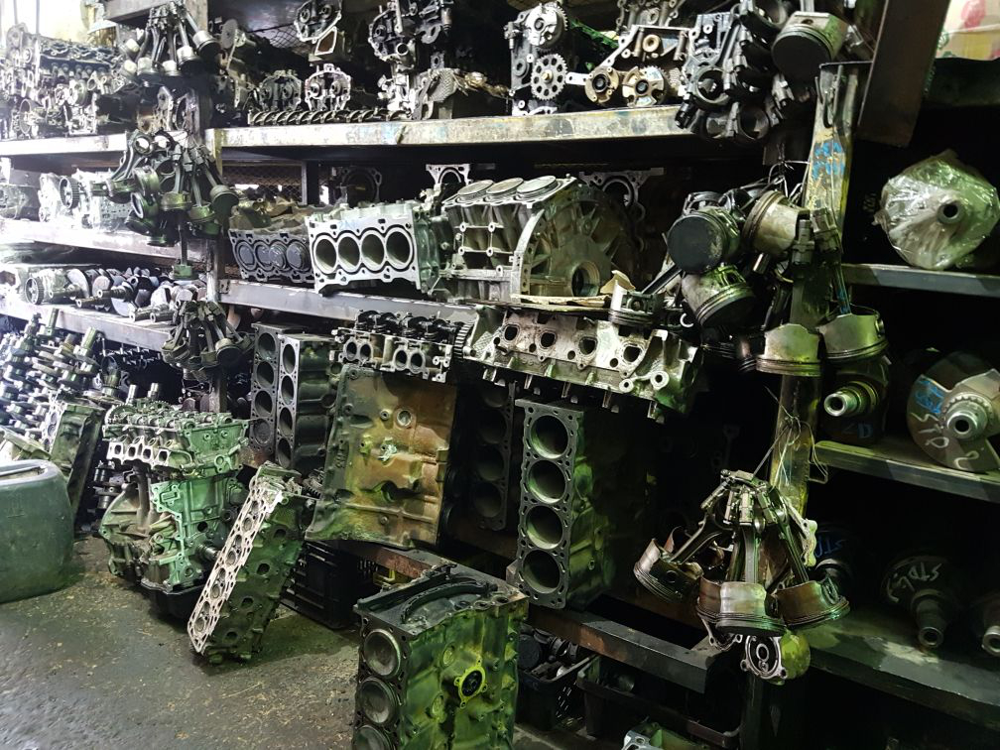department of trafficconfidence score: 0.508512
1328x747-1_-HM521cHLOUgxFj.jpg
department of trafficconfidence score: 0.481886
146x258-1_-7xCa5xK2msxVND.jpg
 department of traffic
department of trafficconfidence score: 0.761176
150x116-1_-ZcXB7tb2pgd4oT.jpg
department of trafficconfidence score: 0.483663
180x292-1_-H4G7UG4zRhZoVW.jpg
 jeddah municipality a
jeddah municipality aconfidence score: 0.833994
180x292-1_-YmlxeHCpvxBUfv.jpg
jeddah municipality aconfidence score: 0.833994
200x200-1_-nMKClGRR6RTqeU.jpg
 ministry of labor
ministry of laborconfidence score: 0.432850
202x154-1_-AZWohwtJp9oeFc.jpg
ministry of laborconfidence score: 0.890499
202x154-1_-i0IcVMIjITvrbj.jpg
 ministry of labor
ministry of laborconfidence score: 0.890499
230x408-1_-ZzaRqABB2WJK1y.jpg
ministry of laborconfidence score: 0.771119
240x180-1_-lzhXRPkLs67vo5.jpg
ministry of laborconfidence score: 0.335511
240x182-1_-G7kiwp1TMxJ7NE.jpg
ministry of laborconfidence score: 0.790128
240x240-1_-0T4HzfpyjBZFDh.jpg
ministry of commercial aconfidence score: 0.379583
240x240-1_-6xzvjf06VdUMRD.jpg
jeddah municipality bconfidence score: 0.453612
240x240-1_-9M0mfsju2UJafc.jpg
ministry of laborconfidence score: 0.520724
240x240-1_-D6FOUYxgCCM5xp.jpg
ministry of laborconfidence score: 0.952366
240x240-1_-IX3XlB2MskC4EX.jpg
department of passportconfidence score: 0.481990
240x240-1_-Ja82NVAPL9vd9B.jpg
ministry of commercial aconfidence score: 0.642070
240x240-1_-JbvPVghTBnLj0D.jpg
ministry of commercial aconfidence score: 0.635430
240x240-1_-OJ0zxjt5XXdLMN.jpg
department of passportconfidence score: 0.601279
240x240-1_-uuotrTezSQ0xxd.jpg
ministry of commercial aconfidence score: 0.629246
240x240-1_-Xw1Pp23768pWl8.jpg
ministry of laborconfidence score: 0.919297
240x240-1_-Y2U5EF9sBrnPMK.jpg
 ministry of commercial a
ministry of commercial aconfidence score: 0.398910
240x312-1_-yrqmu34n9G5vkH.jpg
jeddah municipality aconfidence score: 0.593467
240x400-1_-9eduCq2Yel7eAW.jpg
ministry of laborconfidence score: 0.676058
240x400-1_-RK5qBstayN7a6b.jpg
ministry of laborconfidence score: 0.537899
240x400-1_-t3H4d5lq7cAG48.jpg
jeddah municipality aconfidence score: 0.492268
240x427-1_-0GYs2VmVBqMsQG.jpg
ministry of laborconfidence score: 0.687891
242x161-1_-K4PuCmOJYCbVRA.jpg
ministry of laborconfidence score: 0.468134
250x250-1_-3TtpI7ptN2xxEd.jpg
 department of traffic
department of trafficconfidence score: 0.955860
250x250-1_-62E3I87MdBMa62.jpg
jeddah municipality aconfidence score: 0.524144
250x250-1_-udHPaV4aOTSR6h.jpg
 department of traffic
department of trafficconfidence score: 0.955860
250x250-1_-XAhikkoa6LKMWQ.jpg
department of trafficconfidence score: 0.955860
270x204-1_-vj6BGy2cp1I03N.jpg
ministry of laborconfidence score: 0.646614
270x480-1_-1qR9vOiAoZvsAN.jpg
ministry of laborconfidence score: 0.475008
270x480-1_-pl9auUUWIixR74.jpg
ministry of laborconfidence score: 0.320367
276x207-1_-FZ2bqkB9MoqYaH.jpg
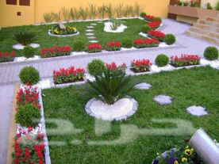ministry of laborconfidence score: 0.512454
279x412-1_-8-W90iCL97l1d7.jpg
ministry of laborconfidence score: 0.718093
291x291-1_-rE9kTzfCb2khN2.jpg
department of trafficconfidence score: 0.561663
291x516-1_-A6nd1Rt0qp1V3G.jpg
jeddah municipality aconfidence score: 0.516664
292x480-1_-OnSkJdo0jtXsQz.jpg
department of trafficconfidence score: 0.570759
293x293-1_-qLIaFh1nj0fkk3.jpg
ministry of laborconfidence score: 0.504374
300x366-1_-Du3kk3m6uF0Iuo.jpg
ministry of laborconfidence score: 0.429022
300x366-1_-GIyrEor18eCkxz.jpg
jeddah municipality bconfidence score: 0.266000
30s60yaK2Z2OV0.jpg
ministry of laborconfidence score: 0.572719
320x320-1_-mFhKsKl6U1fUKq.jpg
jeddah municipality aconfidence score: 0.660755
320x568-1_-TnBaSGb0SzFPEH.jpg
ministry of laborconfidence score: 0.392485
339x339-1_-QKahTcR9VsvohY.jpg
jeddah municipality aconfidence score: 0.795386
345x292-1_-hpW9L1gFpZSQql.jpg
ministry of laborconfidence score: 0.588971
345x292-1_-R7lseC0YM4LKkY.jpg
 ministry of labor
ministry of laborconfidence score: 0.588971
360x218-1_-OiMfxOKMjCOi4e.jpg
jeddah municipality bconfidence score: 0.515922
360x220-1_-q6iL5WUczFBnHD.jpg
jeddah municipality aconfidence score: 0.691668
360x270-1_-5fjijZrNcefKfH.jpg
jeddah municipality aconfidence score: 0.475055
360x356-1_-azxd6CIe19BdnO.jpg
ministry of laborconfidence score: 0.539115
360x360-1_-At48c4b0U3QTRv.jpg
 ministry of labor
ministry of laborconfidence score: 0.924877
360x360-1_-cyDD5tzMOTRepM.jpg
department of passportconfidence score: 0.377201
360x360-1_-erHiQRWNCLfrPV.jpg
jeddah municipality aconfidence score: 0.403918
360x360-1_-I3hskLmIl0m5Ro.jpg
department of trafficconfidence score: 0.614640
360x360-1_-Jt4EFbk2NFY1Tc.jpg
ministry of commercial aconfidence score: 0.798959
360x360-1_-PA0Gy6xSsADnJJ.jpg
jeddah municipality aconfidence score: 0.579145
360x393-1_-5LYEjpgYm6YYy7.jpg
ministry of laborconfidence score: 0.834664
360x444-1_-FXAMMkyF3HjH8s.jpg
department of trafficconfidence score: 0.510259
360x640-1_-eKcVqWD3klTzj8.jpg
jeddah municipality aconfidence score: 0.384616
360x640-1_-f9rzEH2LLmovc5.jpg
department of trafficconfidence score: 0.646948
360x640-1_-htt35GIYv6eDkD.jpg
jeddah municipality aconfidence score: 0.549581
360x640-1_-ieNKkRbE26Otrm.jpg
jeddah municipality aconfidence score: 0.534631
360x640-1_-VBcbWlMjpIrE5G.jpg
ministry of commercial aconfidence score: 0.529107
360x640-1_-w1ScAIUSgdz4bv.jpg
jeddah municipality aconfidence score: 0.678422
360x640-1_-WamF7gMsKRDNHi.jpg
ministry of laborconfidence score: 0.489088
360x640-1_-YyfHFaq1CAkbR8.jpg
jeddah municipality aconfidence score: 0.503499
360x640-1_-zc5tLF2fPHzxx2.jpg
ministry of laborconfidence score: 0.519554
361x642-1_-63yx4bmhMvZ2bH.jpg
ministry of laborconfidence score: 0.394853
383x301-1_-xYiV6RYhZKmKiy.jpg
jeddah municipality aconfidence score: 0.571088
3lDVOHLFTOB347.jpg
 jeddah municipality b
jeddah municipality bconfidence score: 0.697764
400x164-1_-58dd80f2f2d83.jpg
jeddah municipality aconfidence score: 0.900720
400x640-1_-txEFVTUzj4GqY7.jpg
ministry of commercial aconfidence score: 0.691088
404x404-1_-58de1aed217a5.jpg
ministry of commercial aconfidence score: 0.985724
4061BX9lO2Esa3.jpg
ministry of laborconfidence score: 0.758216
419x745-1_-58dd7db63381a.jpg
jeddah municipality bconfidence score: 0.817808
427x640-1_-58de2153e5a70.jpg
department of trafficconfidence score: 0.500885
442x360-1_-ixhWSYTv1pDYky.jpg
jeddah municipality aconfidence score: 0.401198
459x565-1_-G0sh3mCC3BUS69.jpg
department of trafficconfidence score: 0.701280
459x565-1_-HtCYt6qySiNU4a.jpg
department of trafficconfidence score: 0.824114
459x565-1_-wQlpENdXyJzkOs.jpg
department of trafficconfidence score: 0.779250
459x816-1_-4JpozE0aTJstnY.jpg
ministry of laborconfidence score: 0.517577
459x816-1_-8tZSulex0garFL.jpg
jeddah municipality bconfidence score: 0.563441
459x816-1_-OBlT12b8rRPBkF.jpg
department of trafficconfidence score: 0.672090
469x469-1_-W73FoKx8j0QOmH.jpg
department of trafficconfidence score: 0.644083
470x470-1_-ABzSbtkg8kF2QB.jpg
 department of traffic
department of trafficconfidence score: 0.554304
480x360-1_-58de1aeeed3ca.jpg
ministry of laborconfidence score: 0.350563
480x360-1_-IF9lIwzSI5cjtR.jpg
ministry of commercial aconfidence score: 0.526008
480x480-1_-cZIEZEaq8SvmEM.jpg
jeddah municipality aconfidence score: 0.395736
480x480-1_-fnGwOu3gXSv2NV.jpg
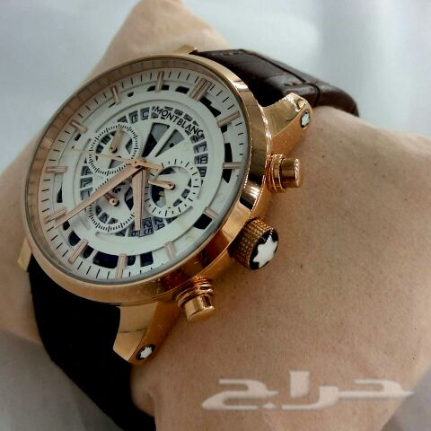department of trafficconfidence score: 0.545892
480x542-1_-qdd87dy4aE09C2.jpg
jeddah municipality bconfidence score: 0.511479
480x640-1_-4Yfanzfc2tVXt0.jpg
department of trafficconfidence score: 0.623046
480x640-1_-6pauWEaKFg50lX.jpg
department of trafficconfidence score: 0.652894
480x640-1_-CrzxW8lOLyr9QR.jpg
department of trafficconfidence score: 0.640250
480x640-1_-dI5XMqYWh4866k.jpg
department of trafficconfidence score: 0.618603
480x640-1_-eGPrUr13XcpowN.jpg
department of trafficconfidence score: 0.559394
480x640-1_-FcVyAHloLOI3gF.jpg
ministry of commercial bconfidence score: 0.671909
480x640-1_-GX7AxDryAktoLN.jpg
ministry of laborconfidence score: 0.578861
480x640-1_-MfHhL8FMNExT6P.jpg
department of trafficconfidence score: 0.654184
480x640-1_-ooLkRa0Zeepsbk.jpg
ministry of laborconfidence score: 0.951969
480x640-1_-PErx1HB6wq5Epk.jpg
 ministry of commercial a
ministry of commercial aconfidence score: 0.646680
480x640-1_-ppUo0F0zgL6yYq.jpg
department of trafficconfidence score: 0.360513
480x640-1_-uD3rZ4AcbxrWPC.jpg
department of trafficconfidence score: 0.751339
480x640-1_-XEdJw4RJOM4kCG.jpg
department of trafficconfidence score: 0.628258
480x711-1_-czyj553071t1Al.jpg
ministry of commercial aconfidence score: 0.301751
480x800-1_-6d4uw96Ac38I0d.jpg
ministry of laborconfidence score: 0.315928
480x800-1_-9p3q73bFEL3M9B.jpg
 ministry of labor
ministry of laborconfidence score: 0.496089
480x800-1_-W7Hw214J5Cd138.jpg
ministry of laborconfidence score: 0.496089
480x800-1_-Yey90ggC20ED7-.jpg
 ministry of labor
ministry of laborconfidence score: 0.315928
483x1080-1_-58dd75001ac0e.jpg
department of trafficconfidence score: 0.790689
484x640-1_-FN2tpD9Ehb4H7k.jpg
department of trafficconfidence score: 0.535739
488x309-1_-2c1nqC12D1iugI.jpg
department of trafficconfidence score: 0.537658
489x282-1_-58ddb090e2689.jpg
department of trafficconfidence score: 0.430651
489x489-1_-eSKN2MS6lBXxe6.jpg
department of trafficconfidence score: 0.525708
500x250-1_-q2M-40s80xJ8db.jpg
ministry of commercial aconfidence score: 0.541661
500x275-1_-1458QT24039f-5.jpg
jeddah municipality bconfidence score: 0.605098
500x364-1_-4fadgag8d9gmJL.jpg
jeddah municipality aconfidence score: 0.634424
500x375-1_-58de13bebe524.jpg
jeddah municipality aconfidence score: 0.561260
500x500-1_-27-F97deAAd921.jpg
jeddah municipality aconfidence score: 0.615254
500x500-1_-6ElCN7E638w5ax.jpg
jeddah municipality aconfidence score: 0.583962
500x500-1_-UT7HdmF4f76Ejr.jpg
ministry of commercial aconfidence score: 0.816495
504x501-1_-58de0c48e6e6a.jpg
department of passportconfidence score: 0.517834
505x505-1_-j4ZfQSkrLUqGPz.jpg
department of trafficconfidence score: 0.628814
506x900-1_-00676reVe73P91.jpg
ministry of laborconfidence score: 0.429160
506x900-1_-05Y7X91EDcp543.jpg
ministry of laborconfidence score: 0.397761
506x900-1_-09a2a7dA7ID1cZ.jpg
 jeddah municipality a
jeddah municipality aconfidence score: 0.420880
506x900-1_-0C3n0b44MYNmPO.jpg
jeddah municipality aconfidence score: 0.615026
506x900-1_-1c44lGhq2E8L00.jpg
department of trafficconfidence score: 0.614210
506x900-1_-1D3t3--P4wBP9v.jpg
department of trafficconfidence score: 0.811577
506x900-1_-1k9LR31xgBmkHL.jpg
ministry of laborconfidence score: 0.355786
506x900-1_-21w4fFh3D3-7wq.jpg
ministry of laborconfidence score: 0.353718
506x900-1_-252rkFA83tzVkd.jpg
ministry of laborconfidence score: 0.360102
506x900-1_-2e9eA5z65HHA19.jpg
 ministry of labor
ministry of laborconfidence score: 0.366007
506x900-1_-38v49a2cDS3d52.jpg
ministry of laborconfidence score: 0.437890
506x900-1_-3a747OmEd9b8e6.jpg
ministry of laborconfidence score: 0.576148
506x900-1_-3dgb47gx4w8aed.jpg
ministry of laborconfidence score: 0.406207
506x900-1_-4oBXYkgqslqeBd.jpg
jeddah municipality aconfidence score: 0.443477
506x900-1_-58dd7d841db23.jpg
ministry of commercial aconfidence score: 0.399807
506x900-1_-5eEIpf-7a8184f.jpg
ministry of laborconfidence score: 0.406139
506x900-1_-60BZNp252oJWCM.jpg
department of trafficconfidence score: 0.511935
506x900-1_-6abqsmY4cG1XtZ.jpg
ministry of laborconfidence score: 0.498557
506x900-1_-6e1ivJvRkPp3D7.jpg
ministry of commercial aconfidence score: 0.454849
506x900-1_-7c4fGD75CIP0a9.jpg
department of trafficconfidence score: 0.502823
506x900-1_-84HEfXSr1aHO62.jpg
department of trafficconfidence score: 0.672181
506x900-1_-8I7Tr-61Aaa0Bt.jpg
department of trafficconfidence score: 0.548596
506x900-1_-94ERX-b5C1HYJI.jpg
 ministry of labor
ministry of laborconfidence score: 0.404083
506x900-1_-95GF92306748A0.jpg
 ministry of labor
ministry of laborconfidence score: 0.397761
506x900-1_-9SPA5B0aR5Af26.jpg
ministry of laborconfidence score: 0.347964
506x900-1_-Ba-S4Vc8Ob4p7X.jpg
jeddah municipality aconfidence score: 0.761710
506x900-1_-C7Jl-2k8984KO1.jpg
jeddah municipality aconfidence score: 0.350239
506x900-1_-cii3zTlaN3wmWn.jpg
department of trafficconfidence score: 0.732974
506x900-1_-d78k36YI88d3e6.jpg
department of trafficconfidence score: 0.666265
506x900-1_-dAkd2DCn844YDc.jpg
ministry of laborconfidence score: 0.370246
506x900-1_-e7MZdWMi0h8ddU.jpg
jeddah municipality aconfidence score: 0.889674
506x900-1_-f47N5F557BE655.jpg
ministry of laborconfidence score: 0.483379
506x900-1_-fCm2k-4U93438T.jpg
department of trafficconfidence score: 0.304221
506x900-1_-FjYZgtl67x3LWg.jpg
ministry of commercial aconfidence score: 0.378191
506x900-1_-HaSCZl3Nr8GU30.jpg
ministry of laborconfidence score: 0.357490
506x900-1_-IA1tTRKWyPm66S.jpg
ministry of laborconfidence score: 0.622030
506x900-1_-iFFzvcB-DcfF16.jpg
department of trafficconfidence score: 0.659941
506x900-1_-IGPZIUc7d4K1JO.jpg
ministry of laborconfidence score: 0.555249
506x900-1_-jiB9wdj9QkMRoO.jpg
ministry of laborconfidence score: 0.475083
506x900-1_-k759AZ45i-4eeL.jpg
ministry of laborconfidence score: 0.450567
506x900-1_-kZdG0boNpQBSrX.jpg
ministry of commercial aconfidence score: 0.406875
506x900-1_-Mo9A7SE14aZo99.jpg
ministry of laborconfidence score: 0.396997
506x900-1_-N8PQ19AE-196d5.jpg
jeddah municipality aconfidence score: 0.453718
506x900-1_-oA0zMy22D27tsb.jpg
jeddah municipality aconfidence score: 0.707468
506x900-1_-p57rBMB84YJA5w.jpg
ministry of laborconfidence score: 0.612385
506x900-1_-Pz8bh0j94ybZc7.jpg
jeddah municipality aconfidence score: 0.790647
506x900-1_-qbB7fb41Rr7fD5.jpg
ministry of laborconfidence score: 0.406372
506x900-1_-tE2TWuEAb365Tx.jpg
department of trafficconfidence score: 0.551854
506x900-1_-UiAneLEuN9irKe.jpg
jeddah municipality aconfidence score: 0.907125
506x900-1_-xbEd--BJ0A4713.jpg
ministry of laborconfidence score: 0.471723
506x900-1_-XoiXOXHC1OEPQk.jpg
ministry of laborconfidence score: 0.333033
506x900-1_-xtmztmgpewM3hz.jpg
jeddah municipality aconfidence score: 0.564289
506x900-1_-YAd795aF22Is9N.jpg
department of trafficconfidence score: 0.558569
506x900-1_-ZRqIuOX3LGitwI.jpg
ministry of laborconfidence score: 0.404989
507x900-1_-0ob6Hf9db-B6ge.jpg
jeddah municipality bconfidence score: 0.499787
507x900-1_-26a2v4Gu8lgH74.jpg
department of trafficconfidence score: 0.819883
507x900-1_-4JD26AtUM2SwAF.jpg
ministry of laborconfidence score: 0.579892
507x900-1_-8dDcC16fn5026Z.jpg
jeddah municipality aconfidence score: 0.675861
507x900-1_-Aw-8OT4CvSF4h2.jpg
jeddah municipality aconfidence score: 0.452880
507x900-1_-C97Mx2748ea9w1.jpg
 ministry of commercial a
ministry of commercial aconfidence score: 0.497560
507x900-1_-e15jgc2pwBP0CR.jpg
jeddah municipality bconfidence score: 0.338929
507x900-1_-E58ONB-F48E3Zd.jpg
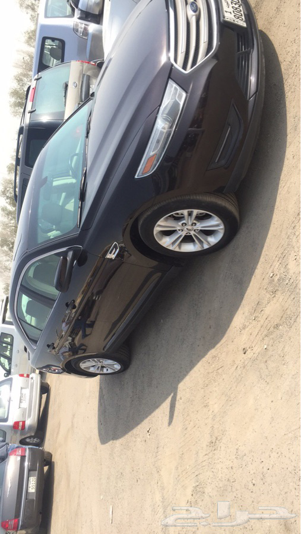department of trafficconfidence score: 0.540493
507x900-1_-e9a8L8B-J3176E.jpg
ministry of laborconfidence score: 0.385056
507x900-1_-FAnmL5D2NM0G74.jpg
jeddah municipality aconfidence score: 0.500616
507x900-1_-IB86P7320oDIdC.jpg
ministry of laborconfidence score: 0.460469
507x900-1_-K7832859-CA3T4.jpg
jeddah municipality aconfidence score: 0.574563
507x900-1_-XEA302fk6bsD3C.jpg
jeddah municipality aconfidence score: 0.388459
508x900-1_-0S-3cETC8DBo05.jpg
 ministry of commercial a
ministry of commercial aconfidence score: 0.452609
508x900-1_-541PfgB0YDBwdD.jpg
ministry of laborconfidence score: 0.748918
508x900-1_-54cq9k873r7W5N.jpg
ministry of laborconfidence score: 0.466333
508x900-1_-5588qb197-DNS5.jpg
 ministry of labor
ministry of laborconfidence score: 0.382843
508x900-1_-aG5p3T582jUE4Q.jpg
ministry of laborconfidence score: 0.517781
508x900-1_-BO-5B-612WLCSn.jpg
ministry of laborconfidence score: 0.634157
508x900-1_-cD292d8l2o1-0p.jpg
department of trafficconfidence score: 0.624629
508x900-1_-E91DENs9-5f8nJ.jpg
ministry of commercial aconfidence score: 0.452609
508x900-1_-ekdYY98Fl325kA.jpg
jeddah municipality aconfidence score: 0.991115
508x900-1_-fEE4IrZ7q12Jb8.jpg
ministry of laborconfidence score: 0.543832
508x900-1_-fok7b2L03OC470.jpg
ministry of laborconfidence score: 0.438327
508x900-1_-jMf3DtM6pRAyM6.jpg
ministry of laborconfidence score: 0.382843
508x900-1_-pEBDc7aTE85Fa7.jpg
department of passportconfidence score: 0.726140
508x900-1_-pKb6B-yGBR-iaE.jpg
ministry of laborconfidence score: 0.422210
508x900-1_-QATbi449BCa1E7.jpg
 ministry of labor
ministry of laborconfidence score: 0.543832
508x900-1_-Z45bb2bEgK7f21.jpg
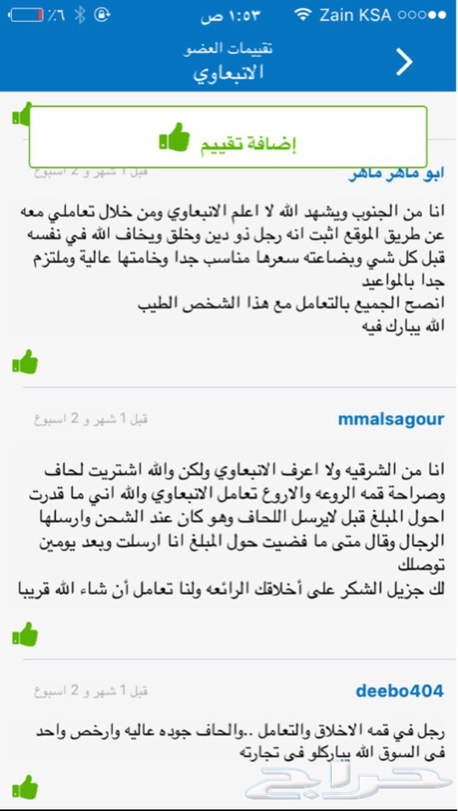ministry of laborconfidence score: 0.472088
512x512-1_-trhUxQ2jO5pzKj.jpg
ministry of commercial aconfidence score: 0.592120
512x512-1_-YS1qWskAAO1kyg.jpg
 ministry of commercial a
ministry of commercial aconfidence score: 0.592120
518x518-1_-AOj3f1z9eg83iT.jpg
department of trafficconfidence score: 0.556894
519x900-1_-58dd8243093d8.jpg
 ministry of commercial a
ministry of commercial aconfidence score: 0.443554
520x520-1_-1EwkS5dW4P0hj0.jpg
jeddah municipality bconfidence score: 0.560923
520x640-1_-ppv6tkChUI2Ush.jpg
department of trafficconfidence score: 0.758334
520x640-1_-SDW4oXklKn0rN3.jpg
department of trafficconfidence score: 0.638010
522x522-1_-MFY4OOfUR7Ab7G.jpg
department of trafficconfidence score: 0.685671
531x531-1_-iRzDNq8cfQxV9B.jpg
department of passportconfidence score: 0.805128
531x900-1_-vSQ7oY0apMX64f.jpg
ministry of laborconfidence score: 0.502427
532x325-1_-vP7h1XiFkQk7oY.jpg
jeddah municipality bconfidence score: 0.817680
535x535-1_-55054k66sFHUTw.jpg
department of trafficconfidence score: 0.528426
540x540-1_-aBFx8o9tygzvUT.jpg
department of trafficconfidence score: 0.860658
540x540-1_-be8oXj1evittdw.jpg
ministry of commercial aconfidence score: 0.918304
540x540-1_-HJ3zToyxLb6Sws.jpg
ministry of commercial aconfidence score: 0.541303
540x540-1_-Mnj59rU9SEDJEx.jpg
department of trafficconfidence score: 0.820197
540x960-1_-12W96IwKeKfMbi.jpg
ministry of commercial aconfidence score: 0.406651
540x960-1_-95Soblm2bRsTFw.jpg
department of trafficconfidence score: 0.773960
540x960-1_-c36C5i8hdBIpbL.jpg
 department of traffic
department of trafficconfidence score: 0.773960
540x960-1_-gS9pHCK0R7XZHM.jpg
jeddah municipality aconfidence score: 0.811795
540x960-1_-kABKv1UxgW4Tdj.jpg
 department of traffic
department of trafficconfidence score: 0.773960
540x960-1_-uBIUxXlmgANQy0.jpg
ministry of laborconfidence score: 0.678903
548x310-1_-58ddf912ba63e.jpg
 jeddah municipality a
jeddah municipality aconfidence score: 0.960301
548x310-1_-58ddfada0610f.jpg
 jeddah municipality a
jeddah municipality aconfidence score: 0.960301
548x310-1_-58ddfb0c94d77.jpg
jeddah municipality aconfidence score: 0.960301
556x545-1_-RGXtphn30i3VbW.jpg
jeddah municipality bconfidence score: 0.476636
559x900-1_-dIsDwBea93fk1c.jpg
jeddah municipality aconfidence score: 0.810845
563x640-1_-hA2dPiRdAn2Dyt.jpg
department of trafficconfidence score: 0.521622
567x567-1_-21g6FGGrQRoxwD.jpg
jeddah municipality bconfidence score: 0.494429
569x568-1_-W3H4S7Dc7VECLP.jpg
department of trafficconfidence score: 0.483130
573x900-1_-M6f8b52cd3p5dH.jpg
ministry of laborconfidence score: 0.525817
584x640-1_-LngqNwTU5qFVZm.jpg
department of trafficconfidence score: 0.919654
588x700-1_-58dde518526f9.jpg
ministry of laborconfidence score: 0.649650
588x700-1_-58ddef4118d7e.jpg
 ministry of labor
ministry of laborconfidence score: 0.649650
588x700-1_-58de1422e2b12.jpg
ministry of laborconfidence score: 0.663157
592x451-1_-9G4oXoON264KF3.jpg
jeddah municipality aconfidence score: 0.890634
594x253-1_-58ddfb096b1cf.jpg
jeddah municipality aconfidence score: 0.700435
599x344-1_-58dd8a73ef55b.jpg
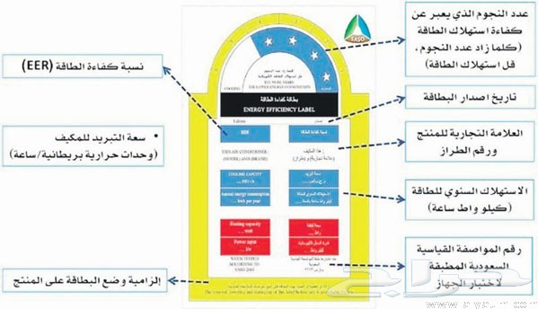ministry of laborconfidence score: 0.706563
5nhlDyqA47b3GI.jpg
jeddah municipality aconfidence score: 0.511672
600x350-1_-8s8w3e3ke4b8Mq.jpg
jeddah municipality aconfidence score: 0.986086
600x400-1_-75ARRwqdqS0dYA.jpg
jeddah municipality aconfidence score: 0.611287
600x900-1_-3h6kB8E4PPVdEz.jpg
department of trafficconfidence score: 0.475483
600x900-1_-CFVa8-FE0Z58kQ.jpg
department of trafficconfidence score: 0.494001
600x900-1_-SCaCPMY0c6D0Um.jpg
ministry of laborconfidence score: 0.460555
600x900-1_-xA-3ds0bu70N5s.jpg
jeddah municipality aconfidence score: 0.505717
606x1080-1_-58ddf67b735fc.jpg
ministry of laborconfidence score: 0.523169
606x1080-1_-58ddf694d2655.jpg
ministry of laborconfidence score: 0.416062
606x1080-1_-58de035a0302e.jpg
ministry of commercial aconfidence score: 0.563947
607x1080-1_-58dd602b2d155.jpg
ministry of commercial aconfidence score: 0.339296
607x1080-1_-58dd702493719.jpg
ministry of laborconfidence score: 0.524329
607x1080-1_-58dd75f89e82b.jpg
 jeddah municipality a
jeddah municipality aconfidence score: 0.690597
607x1080-1_-58dd7753b8d73.jpg
 ministry of labor
ministry of laborconfidence score: 0.373075
607x1080-1_-58dd77606cdb5.jpg
 ministry of labor
ministry of laborconfidence score: 0.411530
607x1080-1_-58dd7bed322c0.jpg
jeddah municipality aconfidence score: 0.594692
607x1080-1_-58dd7d825f121.jpg
ministry of laborconfidence score: 0.373075
607x1080-1_-58dd7d8b867a2.jpg
 ministry of labor
ministry of laborconfidence score: 0.411530
607x1080-1_-58dd7ffc7e436.jpg
department of trafficconfidence score: 0.551712
607x1080-1_-58dd9296c30a6.jpg
department of trafficconfidence score: 0.515763
607x1080-1_-58dd9361cd5f3.jpg
ministry of laborconfidence score: 0.339415
607x1080-1_-58dd936b2624b.jpg
 ministry of commercial a
ministry of commercial aconfidence score: 0.357973
607x1080-1_-58dd942bb7abd.jpg
 ministry of labor
ministry of laborconfidence score: 0.339415
607x1080-1_-58dd9434a7cbf.jpg
 ministry of commercial a
ministry of commercial aconfidence score: 0.357973
607x1080-1_-58dd94e94af22.jpg
 ministry of labor
ministry of laborconfidence score: 0.339415
607x1080-1_-58dd94f45e81f.jpg
 ministry of commercial a
ministry of commercial aconfidence score: 0.357973
607x1080-1_-58dda3fcb8831.jpg
ministry of laborconfidence score: 0.548378
607x1080-1_-58dda402973eb.jpg
ministry of laborconfidence score: 0.463663
607x1080-1_-58ddc05aedabd.jpg
ministry of commercial aconfidence score: 0.576129
607x1080-1_-58dde212677f2.jpg
jeddah municipality aconfidence score: 0.690597
607x1080-1_-58ddedec3eab6.jpg
 ministry of commercial a
ministry of commercial aconfidence score: 0.363048
607x1080-1_-58ddedf04bda9.jpg
 ministry of labor
ministry of laborconfidence score: 0.403482
607x1080-1_-58ddf5c976936.jpg
ministry of commercial aconfidence score: 0.363048
607x1080-1_-58ddf5cdba936.jpg
ministry of laborconfidence score: 0.403482
607x1080-1_-58ddf5d170723.jpg
ministry of laborconfidence score: 0.434176
607x1080-1_-58de0b94070ef.jpg
 ministry of labor
ministry of laborconfidence score: 0.413316
607x1080-1_-58de0be2dc578.jpg
ministry of laborconfidence score: 0.362511
607x1080-1_-58de160c44c86.jpg
department of trafficconfidence score: 0.643662
607x1080-1_-58de1b85e947c.jpg
department of trafficconfidence score: 0.770234
607x1080-1_-58de1b86b80f8.jpg
department of trafficconfidence score: 0.602335
607x1080-1_-58de1ba347066.jpg
department of trafficconfidence score: 0.951751
607x881-1_-58df303c01407.jpg
ministry of commercial aconfidence score: 0.486727
607x891-1_-58df303a0d824.jpg
 ministry of labor
ministry of laborconfidence score: 0.438245
608x1080-1_-58ddbdee0d72d.jpg
ministry of commercial aconfidence score: 0.778624
608x1080-1_-58de1a3139f03.jpg
jeddah municipality bconfidence score: 0.492961
610x1080-1_-58ddfab8e71bd.jpg
ministry of laborconfidence score: 0.544008
612x816-1_-72t4UUd9DWEfGB.jpg
 jeddah municipality b
jeddah municipality bconfidence score: 0.331311
618x900-1_--fId154SHcAEc9.jpg
jeddah municipality aconfidence score: 0.961820
620x620-1_-00k7pEQX0iAC67.jpg
department of trafficconfidence score: 0.545871
620x620-1_-4F9Afcr7Rx92D3.jpg
 jeddah municipality a
jeddah municipality aconfidence score: 0.568413
620x620-1_-AdCnJ3a5868b21.jpg
department of trafficconfidence score: 0.945300
620x620-1_-U1J69vb33nD535.jpg
 jeddah municipality a
jeddah municipality aconfidence score: 0.568413
620x828-1_-241K9Q12cL82Vc.jpg
department of trafficconfidence score: 0.954164
620x828-1_-F5a6eix7j6Oou2.jpg
 department of traffic
department of trafficconfidence score: 0.954164
622x673-1_-74Y16Z599c62T0.jpg
jeddah municipality aconfidence score: 0.290333
622x676-1_-B3B5FE6442736A.jpg
jeddah municipality aconfidence score: 0.446816
626x765-1_-58de1b8298f05.jpg
department of trafficconfidence score: 0.562532
637x900-1_-4z3bHa-UH234e3.jpg
jeddah municipality bconfidence score: 0.545959
639x856-1_-58dd78f991c7c.jpg
jeddah municipality aconfidence score: 0.897635
639x859-1_-58dd78f7e4e45.jpg
jeddah municipality aconfidence score: 0.951497
640x317-1_-58dd7e24c2a5a.jpg
 ministry of labor
ministry of laborconfidence score: 0.461921
640x317-1_-58dd807d68b02.jpg
ministry of laborconfidence score: 0.461921
640x360-1_-3lS2Tvks9iNE9i.jpg
ministry of commercial aconfidence score: 0.410451
640x360-1_-aGdd8SDDuyl8N3.jpg
 jeddah municipality a
jeddah municipality aconfidence score: 0.587821
640x360-1_-JmRy1mFnjXrXG2.jpg
department of trafficconfidence score: 0.854998
640x426-1_-58de0328c2eab.jpg
 department of traffic
department of trafficconfidence score: 0.690526
640x427-1_-58de2117bade2.jpg
department of trafficconfidence score: 0.756512
640x427-1_-58de211c29287.jpg
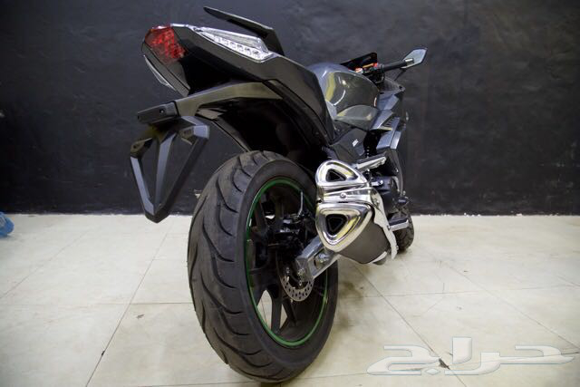department of trafficconfidence score: 0.678444
640x427-1_-58de213097984.jpg
department of trafficconfidence score: 0.546325
640x427-1_-58de213c7ba0e.jpg
department of trafficconfidence score: 0.759142
640x427-1_-58de214126665.jpg
department of trafficconfidence score: 0.746069
640x427-1_-58de2148b4109.jpg
department of trafficconfidence score: 0.715319
640x427-1_-58de21728f586.jpg
department of trafficconfidence score: 0.807706
640x427-1_-58de2174588db.jpg
department of trafficconfidence score: 0.805716
640x427-1_-pdBWyTT9QSlk1q.jpg
department of trafficconfidence score: 0.510487
640x439-1_-o8VJ01Nx6f7z40.jpg
jeddah municipality aconfidence score: 0.675217
640x448-1_-8sfE6B3AqiXUz3.jpg
 department of traffic
department of trafficconfidence score: 0.393026
640x476-1_-1i3039N94Gn1Uk.jpg
department of trafficconfidence score: 0.563582
640x640-1_-2C2lCUR73xeq62.jpg
jeddah municipality aconfidence score: 0.577554
640x640-1_-58de0966db846.jpg
jeddah municipality aconfidence score: 0.772602
640x640-1_-aIg58ztvjCeAj2.jpg
department of trafficconfidence score: 0.544052
640x640-1_-D9CC463c45eeI4.jpg
 jeddah municipality a
jeddah municipality aconfidence score: 0.632431
640x640-1_-m8Mmu4n4AkYZ2a.jpg
department of trafficconfidence score: 0.578791
640x640-1_-QPSwG8X3pOACto.jpg
department of trafficconfidence score: 0.554915
640x852-1_-58dd82d3f1aa0.jpg
department of trafficconfidence score: 0.560219
640x852-1_-58dd82d674baa.jpg
 department of traffic
department of trafficconfidence score: 0.543824
640x852-1_-58dd82d87cba2.jpg
department of trafficconfidence score: 0.638231
644x496-1_-F33N474T0mF64f.jpg
jeddah municipality aconfidence score: 0.998489
646x366-1_-DJbl8iJWPsBdlG.jpg
department of trafficconfidence score: 0.932871
652x900-1_-se7O609763vf50.jpg
ministry of laborconfidence score: 0.522685
657x900-1_-8076ZaFB54Da5a.jpg
ministry of commercial aconfidence score: 0.513142
663x1080-1_-58dd83eca2e7f.jpg
ministry of laborconfidence score: 0.479641
674x1080-1_-58ddfc30ecd7a.jpg
department of trafficconfidence score: 0.771637
675x1000-1_-58dda9126cbe1.jpg
jeddah municipality aconfidence score: 0.995978
675x900-1_-06Qz0aFk-zbAe3.jpg
 department of traffic
department of trafficconfidence score: 0.503388
675x900-1_-0Jz6503s1x2A2e.jpg
 jeddah municipality a
jeddah municipality aconfidence score: 0.541100
675x900-1_-1-N3BKFTKF-G68.jpg
department of trafficconfidence score: 0.647044
675x900-1_-27NdA25K75n2ov.jpg
jeddah municipality aconfidence score: 0.588774
675x900-1_-3K2L5he2UEzAOy.jpg
jeddah municipality bconfidence score: 0.476062
675x900-1_-4iKd3xNA4279ar.jpg
department of trafficconfidence score: 0.555145
675x900-1_-502n48-f07AO8a.jpg
department of trafficconfidence score: 0.510309
675x900-1_-58dd9e774aeb4.jpg
department of trafficconfidence score: 0.537087
675x900-1_-5EedP-53o4Z-E4.jpg
 department of traffic
department of trafficconfidence score: 0.675568
675x900-1_-98Gbg9-1J93q6-.jpg
 department of traffic
department of trafficconfidence score: 0.503388
675x900-1_-a479AN-16ef1c1.jpg
department of trafficconfidence score: 0.728703
675x900-1_-AAUFF1no77nMD6.jpg
department of trafficconfidence score: 0.542949
675x900-1_-AB4ZD965cbFA6z.jpg
department of trafficconfidence score: 0.711234
675x900-1_-aBjL5wgASm3-ay.jpg
 department of traffic
department of trafficconfidence score: 0.503388
675x900-1_-BD21Z1Y4QANzBM.jpg
department of trafficconfidence score: 0.503388
675x900-1_-bn30jssDE5RLfe.jpg
jeddah municipality aconfidence score: 0.791972
675x900-1_-CE89a0dt9z69WC.jpg
ministry of laborconfidence score: 0.369913
675x900-1_-cm3bU1Rq7va8zN.jpg
jeddah municipality aconfidence score: 0.616020
675x900-1_-d1CCCP8D7li6e3.jpg
jeddah municipality aconfidence score: 0.597480
675x900-1_-D88CF5bSDC4jtm.jpg
department of trafficconfidence score: 0.862599
675x900-1_-DDEa4By893ApzZ.jpg
jeddah municipality aconfidence score: 0.577655
675x900-1_-dz278ZqXc8-VB7.jpg
department of trafficconfidence score: 0.961151
675x900-1_-f913JO0ngaF178.jpg
jeddah municipality bconfidence score: 0.669054
675x900-1_-i3R9y92eKNSOEe.jpg
jeddah municipality aconfidence score: 0.636833
675x900-1_-J31u-3B-43kUk5.jpg
ministry of commercial bconfidence score: 0.490113
675x900-1_-N30KhlnIWN8B9T.jpg
department of passportconfidence score: 0.497371
675x900-1_-olv0nF8-fE46Fa.jpg
jeddah municipality aconfidence score: 0.617973
675x900-1_-pK8Ts63d9Pdl86.jpg
department of trafficconfidence score: 0.874949
675x900-1_-Q1XyBBQ03ue98-.jpg
 jeddah municipality a
jeddah municipality aconfidence score: 0.622482
675x900-1_-qjCn4fc19hL-25.jpg
jeddah municipality bconfidence score: 0.532959
675x900-1_-qt87bM70RngD0F.jpg
jeddah municipality aconfidence score: 0.513067
675x900-1_-u-aXOr45XqWC2C.jpg
 ministry of commercial a
ministry of commercial aconfidence score: 0.492045
675x900-1_-xKc551j5gRxO3A.jpg
ministry of commercial aconfidence score: 0.445097
675x900-1_-yaI69t5Fay7383.jpg
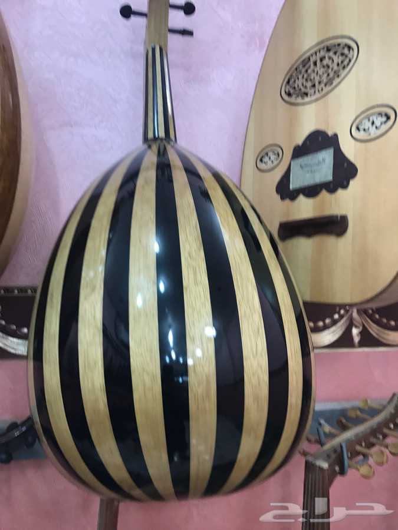jeddah municipality bconfidence score: 0.564041
681x681-1_-YSA0EmdhXFjyNW.jpg
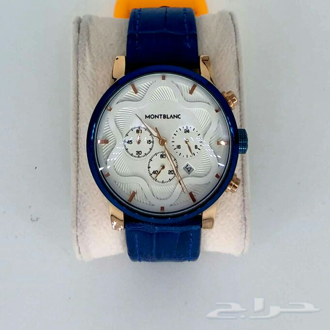department of trafficconfidence score: 0.518386
684x684-1_-FK99fe-X9gbEb0.jpg
ministry of commercial aconfidence score: 0.306135
689x900-1_-odc5X2cdGCE6d8.jpg
department of trafficconfidence score: 0.597318
700x1080-1_-58ddd068d2d19.jpg
ministry of commercial aconfidence score: 0.355829
719x407-1_-58de1b9927ef6.jpg
department of trafficconfidence score: 0.491850
720x1280-1_-58ddc179a200e.jpg
ministry of commercial aconfidence score: 0.411897
720x1280-1_-58ddc19e61def.jpg
ministry of laborconfidence score: 0.331986
720x576-1_-rlBhx1xT147Swf.jpg
jeddah municipality aconfidence score: 0.817302
720x720-1_-58ddb3ea996eb.jpg
department of trafficconfidence score: 0.754876
720x720-1_-58ddf24305fc5.jpg
 jeddah municipality a
jeddah municipality aconfidence score: 0.632365
720x720-1_-58ddf2455571c.jpg
jeddah municipality aconfidence score: 0.524642
720x845-1_-58de1ba64c6b9.jpg
department of trafficconfidence score: 0.681444
728x1080-1_-58dd71bd3b01e.jpg
jeddah municipality aconfidence score: 0.628024
738x887-1_-58de1b7cdf4a1.jpg
department of trafficconfidence score: 0.627859
741x752-1_-aF4d6B1cj3Y1E8.jpg
department of trafficconfidence score: 0.937190
745x743-1_-fFIDAiF1VI7Z40.jpg
 ministry of labor
ministry of laborconfidence score: 0.396688
747x1080-1_-58dd8693f1d31.jpg
ministry of commercial aconfidence score: 0.265228
749x718-1_-KFDY3C2-x62Q58.jpg
department of passportconfidence score: 0.999955
750x511-1_-dbz20KWec3O640.jpg
ministry of laborconfidence score: 0.996403
750x517-1_-YhK33R0lT68Bd1.jpg
department of passportconfidence score: 0.987135
750x539-1_-ecQDfdR0lU4Zd3.jpg
jeddah municipality aconfidence score: 0.731349
750x563-1_-dHFA8tadMVZbTq.jpg
department of trafficconfidence score: 0.895669
750x653-1_-P87-61Q1n37K9D.jpg
jeddah municipality aconfidence score: 0.921439
750x690-1_-d8ZAiRcd2429e1.jpg
department of trafficconfidence score: 0.589251
750x736-1_-58dd934c8af14.jpg
ministry of commercial aconfidence score: 0.481277
763x1080-1_-58dde36118305.jpg
jeddah municipality bconfidence score: 0.473398
764x1080-1_-58de1e620366a.jpg
ministry of laborconfidence score: 0.439392
764x1080-1_-58de1e8062989.jpg
ministry of laborconfidence score: 0.512787
776x723-1_-58ddc32ac12d0.jpg
ministry of commercial aconfidence score: 0.553514
776x723-1_-58ddc33158fc9.jpg
ministry of commercial aconfidence score: 0.564824
779x960-1_-58dddac508057.jpg
department of trafficconfidence score: 0.968372
780x780-1_-iBRjneQGcCAFXn.jpg
 department of traffic
department of trafficconfidence score: 0.696770
780x780-1_-x6NrSQz8AzynXl.jpg
department of trafficconfidence score: 0.696770
789x1080-1_-58dd9777d7de4.jpg
 department of traffic
department of trafficconfidence score: 0.451167
799x430-1_-58de1fcf6fb76.jpg
jeddah municipality bconfidence score: 0.507585
800x460-1_-4Cbr4a-73D7825.jpg
jeddah municipality aconfidence score: 0.880265
810x1080-1_-58dd7512a9221.jpg
 ministry of commercial a
ministry of commercial aconfidence score: 0.419661
810x1080-1_-58dd78b8951f9.jpg
department of trafficconfidence score: 0.674343
810x1080-1_-58dd7d704b0b4.jpg
ministry of commercial aconfidence score: 0.419661
810x1080-1_-58dd8188c350f.jpg
department of trafficconfidence score: 0.729423
810x1080-1_-58dd8286896ea.jpg
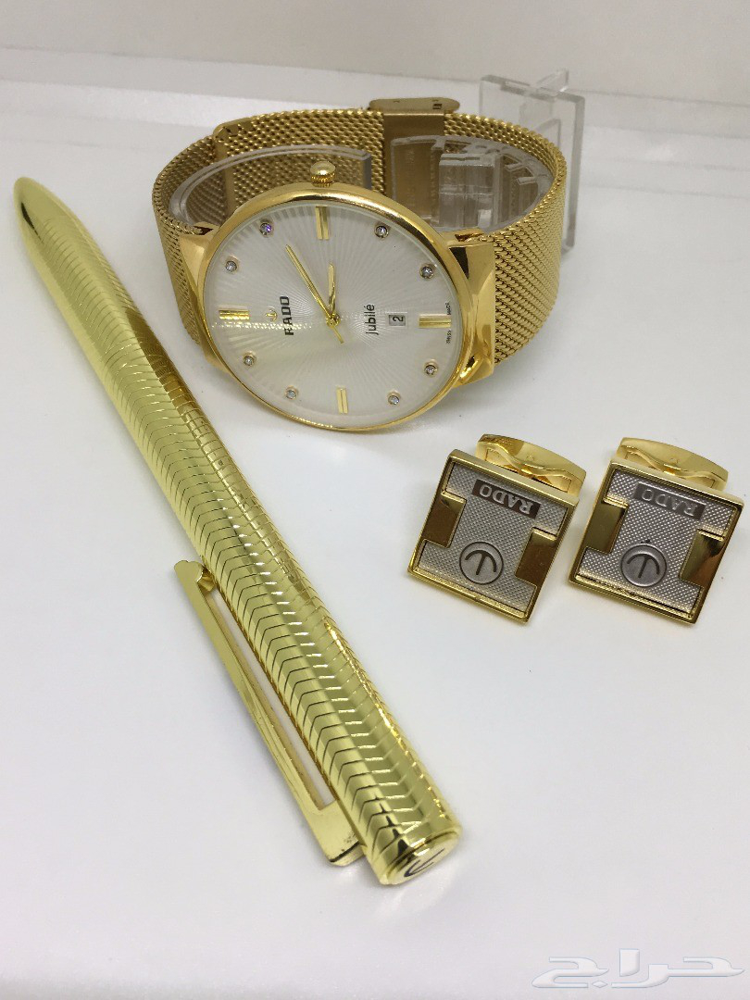department of trafficconfidence score: 0.816183
810x1080-1_-58dd828a043cc.jpg
department of trafficconfidence score: 0.749880
810x1080-1_-58dd82b74a7b4.jpg
department of trafficconfidence score: 0.725868
810x1080-1_-58dd82c5524d8.jpg
department of trafficconfidence score: 0.603914
810x1080-1_-58dd82c9b383d.jpg
department of trafficconfidence score: 0.736852
810x1080-1_-58dd8efb52b6c.jpg
department of trafficconfidence score: 0.726595
810x1080-1_-58dd8f02e54bb.jpg
 department of traffic
department of trafficconfidence score: 0.554569
810x1080-1_-58dd952db2974.jpg
department of trafficconfidence score: 0.529460
810x1080-1_-58dd953014a33.jpg
 department of traffic
department of trafficconfidence score: 0.491800
810x1080-1_-58dd9540bca5f.jpg
department of trafficconfidence score: 0.565450
810x1080-1_-58dd95444c60a.jpg
 department of traffic
department of trafficconfidence score: 0.434486
810x1080-1_-58ddbb8354882.jpg
 department of traffic
department of trafficconfidence score: 0.668464
810x1080-1_-58ddbb89b50f7.jpg
department of trafficconfidence score: 0.805903
810x1080-1_-58de1c331375e.jpg
department of trafficconfidence score: 0.554456
810x1080-1_-58de1c345abc5.jpg
department of trafficconfidence score: 0.736855
810x1080-1_-58de1c35b1c89.jpg
department of trafficconfidence score: 0.452287
810x1080-1_-58de1c373ebde.jpg
department of trafficconfidence score: 0.517133
810x1080-1_-58de1c3a094c8.jpg
 department of traffic
department of trafficconfidence score: 0.627962
810x1080-1_-58de1c3b1827e.jpg
department of trafficconfidence score: 0.657465
810x1080-1_-58de1c3db0289.jpg
department of trafficconfidence score: 0.430241
810x1080-1_-58de1c3f04cc1.jpg
department of trafficconfidence score: 0.687056
810x1080-1_-58de1c40416ed.jpg
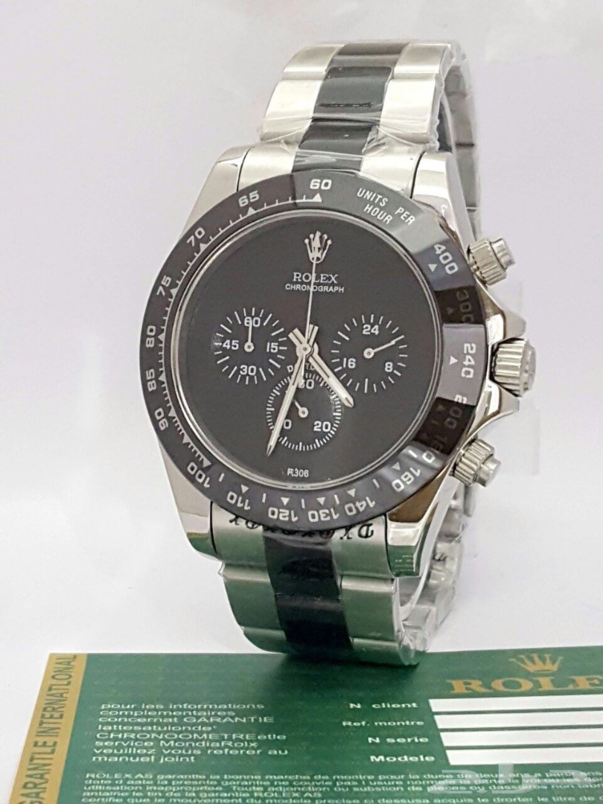department of trafficconfidence score: 0.483163
810x1080-1_-58de1c418844b.jpg
department of trafficconfidence score: 0.561278
811x1080-1_-58de1b9be2d04.jpg
department of trafficconfidence score: 0.610405
811x654-1_-58de1c1b0f636.jpg
department of trafficconfidence score: 0.851965
816x612-1_-30BmxQqALlN0Ev.jpg
ministry of laborconfidence score: 0.691629
821x927-1_-58de1b7bb09ec.jpg
department of trafficconfidence score: 0.561107
825x825-1_-qTwasZr5UVafSh.jpg
department of trafficconfidence score: 0.528332
829x653-1_-58ddb092b832a.jpg
ministry of laborconfidence score: 0.327598
836x625-1_-58de1cc026d85.jpg
ministry of laborconfidence score: 0.817173
846x1080-1_-58dd977c1db41.jpg
department of trafficconfidence score: 0.906850
858x1080-1_-58de1c4a30b74.jpg
department of trafficconfidence score: 0.552685
863x1080-1_-58dd74c03370b.jpg
department of trafficconfidence score: 0.437372
873x1080-1_-58dde2344d712.jpg
ministry of commercial aconfidence score: 0.611193
886x642-1_-58ddb0920fa37.jpg
ministry of laborconfidence score: 0.316721
887x1080-1_-58ddd0119077d.jpg
department of trafficconfidence score: 0.473317
891x202-1_-58dd83fa0e8cc.jpg
jeddah municipality aconfidence score: 0.389540
891x202-1_-58dd83fa98f58.jpg
ministry of commercial aconfidence score: 0.534061
891x202-1_-58dd83fb2276e.jpg
ministry of commercial aconfidence score: 0.297370
899x1080-1_-58ddbb84e9400.jpg
department of trafficconfidence score: 0.644457
8i7MP3FDf1fh3n.jpg
ministry of laborconfidence score: 0.549376
8jfD4AF4DmLyE8.jpg
ministry of laborconfidence score: 0.552350
8TAkGqbmaoWCRL.jpg
jeddah municipality aconfidence score: 0.652945
900x1031-1_-58dd97762c4ee.jpg
department of trafficconfidence score: 0.607331
900x1066-1_-58dd74f910453.jpg
department of trafficconfidence score: 0.414459
900x1078-1_-58dd88a431688.jpg
ministry of commercial aconfidence score: 0.745914
900x309-1_-58dd9ea9f0375.jpg
ministry of laborconfidence score: 0.462511
900x316-1_-58ddd03b16c0d.jpg
department of trafficconfidence score: 0.770212
900x365-1_-58dd8b30dd6c0.jpg
ministry of laborconfidence score: 0.431509
900x391-1_-EL5dZ9vY397Zp8.jpg
department of trafficconfidence score: 0.795960
900x406-1_-58ddd06e41612.jpg
 jeddah municipality a
jeddah municipality aconfidence score: 0.410501
900x436-1_-58dd801fb60d1.jpg
 ministry of commercial a
ministry of commercial aconfidence score: 0.373859
900x436-1_-58dd80b17c71c.jpg
ministry of commercial aconfidence score: 0.373859
900x450-1_-58ddb094ab36f.jpg
ministry of laborconfidence score: 0.798038
900x450-1_-58ddb0955855f.jpg
ministry of laborconfidence score: 0.652516
900x450-1_-58de08ffeb7e9.jpg
ministry of laborconfidence score: 0.615474
900x450-1_-58de09060b26d.jpg
ministry of laborconfidence score: 0.404132
900x450-1_-58de0907ceb40.jpg
 ministry of labor
ministry of laborconfidence score: 0.384861
900x450-1_-58de0a1e1b465.jpg
 ministry of labor
ministry of laborconfidence score: 0.615474
900x450-1_-58de0a237800a.jpg
 ministry of labor
ministry of laborconfidence score: 0.404132
900x450-1_-58de0a2575c09.jpg
ministry of laborconfidence score: 0.384861
900x457-1_-58ddb093de533.jpg
ministry of laborconfidence score: 0.350978
900x474-1_-58dd7fe03db84.jpg
 ministry of commercial a
ministry of commercial aconfidence score: 0.454219
900x474-1_-58dd80a5113ee.jpg
ministry of commercial aconfidence score: 0.454219
900x482-1_-58dd801cd42b5.jpg
 ministry of commercial a
ministry of commercial aconfidence score: 0.467179
900x482-1_-58dd80aec5fc0.jpg
ministry of commercial aconfidence score: 0.467179
900x482-1_-58ddb095eeda8.jpg
 ministry of labor
ministry of laborconfidence score: 0.536130
900x504-1_-58dd99126802d.jpg
department of trafficconfidence score: 0.700483
900x505-1_-58dd735e724e6.jpg
department of trafficconfidence score: 0.649265
900x505-1_-58dd73d8b7307.jpg
department of trafficconfidence score: 0.771545
900x505-1_-58dd790a5b0e7.jpg
department of trafficconfidence score: 0.738542
900x505-1_-58dd7bcf22b74.jpg
department of trafficconfidence score: 0.531043
900x505-1_-58dd7c914b1a6.jpg
department of trafficconfidence score: 0.501565
900x505-1_-58dd827eb37c3.jpg
jeddah municipality aconfidence score: 0.533964
900x505-1_-58dd991e73c91.jpg
jeddah municipality bconfidence score: 0.206585
900x505-1_-58dd9b7b0eb92.jpg
ministry of laborconfidence score: 0.546353
900x505-1_-58dd9bfac6fb8.jpg
 ministry of labor
ministry of laborconfidence score: 0.546353
900x505-1_-58ddb829bec74.jpg
department of trafficconfidence score: 0.459272
900x505-1_-58ddeaaa492cc.jpg
ministry of commercial aconfidence score: 0.607754
900x505-1_-58ddec64b3500.jpg
ministry of commercial aconfidence score: 0.426542
900x505-1_-58ddf0d1a2f87.jpg
department of trafficconfidence score: 0.540611
900x505-1_-58de006dd74d5.jpg
department of trafficconfidence score: 0.967544
900x505-1_-58de14fc55e9f.jpg
department of trafficconfidence score: 0.560211
900x505-1_-58de20a0b5058.jpg
ministry of laborconfidence score: 0.479473
900x506-1_-58dd7f5aedd41.jpg
department of trafficconfidence score: 0.903667
900x506-1_-58dde741389fc.jpg
department of trafficconfidence score: 0.623151
900x506-1_-58de19f8c50ff.jpg
department of trafficconfidence score: 0.540429
900x506-1_-AoOCNFP5lOMR7g.jpg
jeddah municipality aconfidence score: 0.669758
900x506-1_-aWcYJ67R8j7DJU.jpg
jeddah municipality bconfidence score: 0.389596
900x506-1_-EdDxyjYkbAj1Hw.jpg
jeddah municipality bconfidence score: 0.406565
900x506-1_-h4gDCzyJFskpI6.jpg
ministry of laborconfidence score: 0.620631
900x506-1_-h8cTFVZftu5qde.jpg
ministry of laborconfidence score: 0.431833
900x506-1_-Hnra5UEEH1GKab.jpg
ministry of laborconfidence score: 0.407092
900x506-1_-j60VTlweqO6RvS.jpg
ministry of laborconfidence score: 0.465344
900x506-1_-jCY4qecTOzjm3O.jpg
ministry of laborconfidence score: 0.341624
900x506-1_-Jh0CyZqldko6Vs.jpg
department of trafficconfidence score: 0.714182
900x506-1_-m8cef05875Mf4Z.jpg
jeddah municipality bconfidence score: 0.796654
900x506-1_-QQoWXso1fOYf3d.jpg
ministry of laborconfidence score: 0.548046
900x506-1_-r9VJf4PUt9KamY.jpg
ministry of laborconfidence score: 0.737399
900x506-1_-rGHh6lxgcgb5oN.jpg
 ministry of labor
ministry of laborconfidence score: 0.549829
900x506-1_-S9AnZhPBYhKn0n.jpg
ministry of laborconfidence score: 0.506622
900x506-1_-uO5A0rEc2ZqULR.jpg
ministry of laborconfidence score: 0.441682
900x506-1_-zNS63P4Grywdli.jpg
department of trafficconfidence score: 0.705200
900x507-1_-528d3F205-YQug.jpg
jeddah municipality aconfidence score: 0.460585
900x508-1_-58dd9395c8a3f.jpg
jeddah municipality aconfidence score: 0.629884
900x520-1_-58dd71bfa7a0f.jpg
jeddah municipality aconfidence score: 0.934031
900x540-1_-0387P8631e4ED5.jpg
 jeddah municipality a
jeddah municipality aconfidence score: 0.428153
900x561-1_-58dd931ded492.jpg
ministry of laborconfidence score: 0.722211
900x590-1_-gd87gDg3ZCvb5C.jpg
ministry of commercial aconfidence score: 0.888245
900x599-1_-58dd715ad2ef3.jpg
jeddah municipality aconfidence score: 0.430477
900x599-1_-58dd715edad2f.jpg
department of trafficconfidence score: 0.660537
900x599-1_-58dd71ece9afe.jpg
jeddah municipality bconfidence score: 0.514822
900x599-1_-58de00310b694.jpg
jeddah municipality aconfidence score: 0.336714
900x599-1_-58de0ca618881.jpg
ministry of laborconfidence score: 0.574954
900x599-1_-58de0cba2159d.jpg
 jeddah municipality a
jeddah municipality aconfidence score: 0.336714
900x599-1_-b5dEEe-65k51-k.jpg
jeddah municipality aconfidence score: 0.498875
900x600-1_-1DfxCE7PBedfD9.jpg
jeddah municipality aconfidence score: 0.666648
900x600-1_-2BU986s8E97fD9.jpg
jeddah municipality aconfidence score: 0.783823
900x600-1_-55B590T6hVcE2d.jpg
jeddah municipality aconfidence score: 0.753696
900x600-1_-d6e1U07bv4549M.jpg
department of trafficconfidence score: 0.530624
900x600-1_-gd1fs231235E7j.jpg
jeddah municipality aconfidence score: 0.700002
900x600-1_-s8eBfd5p2yB09E.jpg
jeddah municipality aconfidence score: 0.730496
900x602-1_-58ddbb06a0392.jpg
department of trafficconfidence score: 0.383075
900x622-1_-1n14570Gfdt8V1.jpg
jeddah municipality aconfidence score: 0.831345
900x630-1_-58dd6fc34eb5c.jpg
ministry of laborconfidence score: 0.741481
900x635-1_-58dd97d4bcb03.jpg
jeddah municipality aconfidence score: 0.537757
900x635-1_-58dd984fe1330.jpg
ministry of laborconfidence score: 0.742487
900x636-1_-761gg132hZAa9e.jpg
department of trafficconfidence score: 0.381047
900x644-1_-58de004893395.jpg
jeddah municipality aconfidence score: 0.532735
900x662-1_-58de1e6ae1bf7.jpg
ministry of commercial aconfidence score: 0.696668
900x674-1_-58dd7376e3eea.jpg
department of trafficconfidence score: 0.735439
900x674-1_-58dd7b3f04928.jpg
department of trafficconfidence score: 0.758066
900x674-1_-58dd8efa6a384.jpg
department of trafficconfidence score: 0.700050
900x674-1_-58dd8eff1c93a.jpg
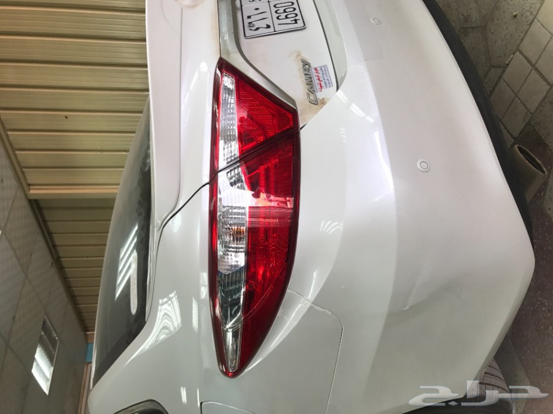department of trafficconfidence score: 0.859185
900x674-1_-58dd8f007ce94.jpg
department of trafficconfidence score: 0.508745
900x674-1_-58dd8f03ba6f4.jpg
department of trafficconfidence score: 0.725305
900x674-1_-58dd8f3d92874.jpg
department of trafficconfidence score: 0.685195
900x674-1_-58dd8f4101bf5.jpg
department of trafficconfidence score: 0.747514
900x674-1_-58dd8f425d6b1.jpg
department of trafficconfidence score: 0.678441
900x674-1_-58dd8f4301ea3.jpg
department of trafficconfidence score: 0.529523
900x674-1_-58dd8f9a6023c.jpg
department of trafficconfidence score: 0.482358
900x674-1_-58dd9006f1f35.jpg
department of trafficconfidence score: 0.732166
900x674-1_-58dd9bd034498.jpg
department of trafficconfidence score: 0.579837
900x674-1_-58dd9bd4da6f6.jpg
department of trafficconfidence score: 0.518028
900x674-1_-58dda944ab7ee.jpg
 department of traffic
department of trafficconfidence score: 0.759297
900x674-1_-58ddb2bb7107a.jpg
 ministry of labor
ministry of laborconfidence score: 0.554096
900x674-1_-58ddbf02d3faa.jpg
department of trafficconfidence score: 0.812115
900x674-1_-58ddc076d1983.jpg
department of trafficconfidence score: 0.595512
900x674-1_-58ddc07c59637.jpg
 department of traffic
department of trafficconfidence score: 0.837837
900x674-1_-58ddc172bf790.jpg
department of trafficconfidence score: 0.837837
900x674-1_-58dde44ab77f5.jpg
department of trafficconfidence score: 0.870804
900x674-1_-58ddedc36fa65.jpg
 ministry of labor
ministry of laborconfidence score: 0.665152
900x674-1_-58ddf521264f1.jpg
jeddah municipality aconfidence score: 0.489540
900x674-1_-58ddf58b5b7b7.jpg
department of trafficconfidence score: 0.511163
900x674-1_-58ddf5bbbd5ee.jpg
ministry of laborconfidence score: 0.665152
900x674-1_-58ddf7d14e20a.jpg
department of trafficconfidence score: 0.581767
900x674-1_-58ddfeaa958d5.jpg
department of trafficconfidence score: 0.492098
900x674-1_-58ddfff592494.jpg
department of trafficconfidence score: 0.620181
900x674-1_-58de022d97797.jpg
department of trafficconfidence score: 0.500941
900x674-1_-58de149cb31f1.jpg
department of trafficconfidence score: 0.630439
900x674-1_-58de1a3f1e5ec.jpg
department of trafficconfidence score: 0.920389
900x674-1_-58de1a4025c31.jpg
department of trafficconfidence score: 0.568950
900x674-1_-58de56d00e07b.jpg
department of trafficconfidence score: 0.589368
900x674-1_-58de56d10a012.jpg
department of trafficconfidence score: 0.704226
900x674-1_-58de56d1da3bd.jpg
department of trafficconfidence score: 0.787617
900x675-1_-08rhrOneF775lG.jpg
ministry of commercial aconfidence score: 0.485569
900x675-1_-3LBCiIUR29BSuz.jpg
department of trafficconfidence score: 0.607159
900x675-1_-3Nz1nO1L8F42BM.jpg
ministry of commercial aconfidence score: 0.824609
900x675-1_-58dd7cf2b3b3c.jpg
department of trafficconfidence score: 0.723335
900x675-1_-58dd9467839b4.jpg
department of trafficconfidence score: 0.539411
900x675-1_-58de0d344ebc1.jpg
department of trafficconfidence score: 0.503996
900x675-1_-5F-d14c-35m1b5.jpg
 jeddah municipality a
jeddah municipality aconfidence score: 0.651293
900x675-1_-740230adK3XCB-.jpg
jeddah municipality aconfidence score: 0.531431
900x675-1_-7kUAfoRVgIlJuK.jpg
department of trafficconfidence score: 0.759153
900x675-1_-82eet-pc9e8C8N.jpg
department of trafficconfidence score: 0.529455
900x675-1_-92Q9CDiC2fd2U3.jpg
jeddah municipality aconfidence score: 0.632624
900x675-1_-95a57G71hePp0e.jpg
department of trafficconfidence score: 0.532607
900x675-1_-A960FJap01JF5B.jpg
jeddah municipality aconfidence score: 0.581978
900x675-1_-aunQyn80xEAfYo.jpg
jeddah municipality aconfidence score: 0.559766
900x675-1_-Br0J1yrgRC1r23.jpg
jeddah municipality aconfidence score: 0.471745
900x675-1_-EaA16R91--8KJj.jpg
jeddah municipality aconfidence score: 0.511583
900x675-1_-ex-14wBNChT42b.jpg
department of trafficconfidence score: 0.498665
900x675-1_-F4VE5Fqya440-K.jpg
jeddah municipality aconfidence score: 0.495006
900x675-1_-FbRh4MdM4uGA5K.jpg
jeddah municipality aconfidence score: 0.499337
900x675-1_-fE5293k19kh759.jpg
department of trafficconfidence score: 0.757109
900x675-1_-G391s4pLR77fFa.jpg
jeddah municipality aconfidence score: 0.471240
900x675-1_-kBs9R9nfkQqvlE.jpg
department of trafficconfidence score: 0.510113
900x675-1_-l8kz-p4d2g4d28.jpg
ministry of commercial aconfidence score: 0.710881
900x675-1_-oZ4sBiC9e4B2Dl.jpg
jeddah municipality aconfidence score: 0.485943
900x675-1_-q2C3e4dAU4b79y.jpg
jeddah municipality aconfidence score: 0.633061
900x675-1_-Q7Cseut1MVyqd7.jpg
jeddah municipality aconfidence score: 0.569240
900x675-1_-rSyiy5JHA9cBcC.jpg
ministry of commercial aconfidence score: 0.932695
900x675-1_-w2dFF65a9aB8wc.jpg
jeddah municipality bconfidence score: 0.886450
900x676-1_-58dde25769a8c.jpg
ministry of commercial aconfidence score: 0.435606
900x678-1_-58ddedf4a126b.jpg
 ministry of labor
ministry of laborconfidence score: 0.392646
900x678-1_-58ddf5d435777.jpg
ministry of laborconfidence score: 0.392646
900x682-1_-8O748U3D3cfeKC.jpg
jeddah municipality aconfidence score: 0.445285
900x704-1_-58de1c26a7136.jpg
department of trafficconfidence score: 0.532727
900x705-1_-a20ws6K475fJB4.jpg
department of trafficconfidence score: 0.402860
900x739-1_-c52Dr81caf9a28.jpg
ministry of laborconfidence score: 0.506528
900x748-1_-fi23s03UJ6Vbw0.jpg
department of trafficconfidence score: 0.801312
900x760-1_-58dd74c3aef2c.jpg
 department of traffic
department of trafficconfidence score: 0.377793
900x763-1_-166A4c8g-9TyHi.jpg
department of trafficconfidence score: 0.630091
900x782-1_-0zEea46-9932zy.jpg
jeddah municipality aconfidence score: 0.440001
900x785-1_-23B23Ouj2ZEBSK.jpg
ministry of commercial bconfidence score: 0.441698
900x808-1_-58de1bbe87c29.jpg
department of trafficconfidence score: 0.558230
900x814-1_--8fN3-639D5y9j.jpg
jeddah municipality aconfidence score: 0.899312
900x814-1_--9ofc29-074Q18.jpg
jeddah municipality aconfidence score: 0.953039
900x814-1_--C8o8J3BMO1-6-.jpg
jeddah municipality aconfidence score: 0.964540
900x814-1_-069Af4P-5dnZ63.jpg
jeddah municipality aconfidence score: 0.899156
900x814-1_-0E9Ged62Eg15E4.jpg
jeddah municipality aconfidence score: 0.914199
900x814-1_-133mhfbAE77z71.jpg
jeddah municipality aconfidence score: 0.809266
900x814-1_-13Z3muni3a6zK4.jpg
jeddah municipality aconfidence score: 0.890857
900x814-1_-1818OAR781251E.jpg
 jeddah municipality a
jeddah municipality aconfidence score: 0.917424
900x814-1_-1C99DwUMfF9wt2.jpg
jeddah municipality aconfidence score: 0.665278
900x814-1_-1f050cc63aDOGv.jpg
jeddah municipality aconfidence score: 0.633156
900x814-1_-2B4D611O0AD3-3.jpg
jeddah municipality aconfidence score: 0.758451
900x814-1_-34cj6hRc7Ks3dC.jpg
 jeddah municipality a
jeddah municipality aconfidence score: 0.918039
900x814-1_-37z5FE8N9Abc12.jpg
jeddah municipality aconfidence score: 0.608859
900x814-1_-3fLqc6dAF13A3k.jpg
jeddah municipality aconfidence score: 0.703162
900x814-1_-411175D9hRmT0-.jpg
jeddah municipality aconfidence score: 0.934134
900x814-1_-42SwpAGoh2mpV1.jpg
jeddah municipality aconfidence score: 0.896242
900x814-1_-4A57961E13o5yf.jpg
jeddah municipality aconfidence score: 0.918499
900x814-1_-54A72zxv7cF21Y.jpg
 jeddah municipality a
jeddah municipality aconfidence score: 0.939227
900x814-1_-5C1dCfX34Iw4NM.jpg
jeddah municipality aconfidence score: 0.957826
900x814-1_-5cy6VEPvbVIoJD.jpg
jeddah municipality aconfidence score: 0.924818
900x814-1_-639HdOKaD4X6BB.jpg
jeddah municipality aconfidence score: 0.901428
900x814-1_-6eESe3ea1E81Ef.jpg
jeddah municipality aconfidence score: 0.643845
900x814-1_-6fjZeE01p2c12d.jpg
 jeddah municipality a
jeddah municipality aconfidence score: 0.537750
900x814-1_-6MYB6eDW7R65Ef.jpg
jeddah municipality aconfidence score: 0.636356
900x814-1_-6o2772QD82k9u7.jpg
jeddah municipality aconfidence score: 0.940333
900x814-1_-76PhhUGArai39a.jpg
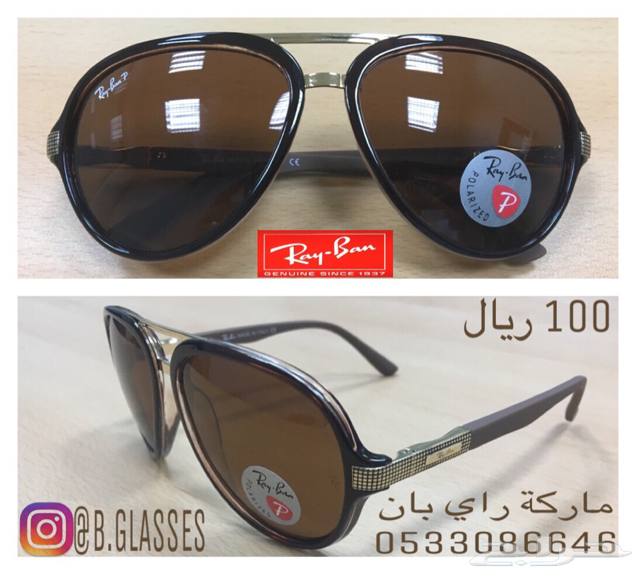jeddah municipality aconfidence score: 0.865032
900x814-1_-822-CG5-I36A19.jpg
jeddah municipality aconfidence score: 0.844335
900x814-1_-8Cc2YWXFDXyC93.jpg
jeddah municipality aconfidence score: 0.892571
900x814-1_-8q6m13D1c6M1BF.jpg
jeddah municipality aconfidence score: 0.953342
900x814-1_-8Re76B7b2F9NEc.jpg
jeddah municipality aconfidence score: 0.594938
900x814-1_-a2257AD-C2aA8Z.jpg
jeddah municipality aconfidence score: 0.723591
900x814-1_-a27-4IuN2CsAp1.jpg
jeddah municipality aconfidence score: 0.877184
900x814-1_-a2VNc6RaI191I8.jpg
 jeddah municipality a
jeddah municipality aconfidence score: 0.702524
900x814-1_-A4443ADqw6aKF7.jpg
 jeddah municipality a
jeddah municipality aconfidence score: 0.853807
900x814-1_-a6B-FQDvS371iB.jpg
jeddah municipality aconfidence score: 0.822896
900x814-1_-aaBIjccpW1WH4a.jpg
jeddah municipality aconfidence score: 0.460079
900x814-1_-bdF-pdK46A7CN6.jpg
jeddah municipality aconfidence score: 0.834901
900x814-1_-BJAD6J589-P314.jpg
jeddah municipality aconfidence score: 0.838267
900x814-1_-C1GQH177b1Z79K.jpg
jeddah municipality aconfidence score: 0.767550
900x814-1_-C25338588E-9lE.jpg
 jeddah municipality a
jeddah municipality aconfidence score: 0.841674
900x814-1_-CV613s5Kc714Y2.jpg
jeddah municipality aconfidence score: 0.569617
900x814-1_-cY179Dk-e2fLOL.jpg
jeddah municipality aconfidence score: 0.790637
900x814-1_-d02bF1c8UhHI5m.jpg
 jeddah municipality a
jeddah municipality aconfidence score: 0.832109
900x814-1_-E-jeC3715qD7Sc.jpg
jeddah municipality aconfidence score: 0.867794
900x814-1_-EBp0af54E82sz5.jpg
jeddah municipality aconfidence score: 0.805126
900x814-1_-ERES9DEBB-e621.jpg
jeddah municipality aconfidence score: 0.674700
900x814-1_-fBaa4d2a-14DBB.jpg
jeddah municipality aconfidence score: 0.879453
900x814-1_-g7191J403c3N0B.jpg
jeddah municipality aconfidence score: 0.645557
900x814-1_-g8895eOqcEziIm.jpg
jeddah municipality aconfidence score: 0.844654
900x814-1_-jT89b2b5wfGbKc.jpg
jeddah municipality aconfidence score: 0.744101
900x814-1_-Kf2oU641Be0c50.jpg
jeddah municipality aconfidence score: 0.755656
900x814-1_-kxT17-vUI63d77.jpg
jeddah municipality aconfidence score: 0.908047
900x814-1_-kY1dk99YFOz69n.jpg
jeddah municipality aconfidence score: 0.828371
900x814-1_-LD497F-1p23-Rc.jpg
jeddah municipality aconfidence score: 0.886371
900x814-1_-muPW12ycsb-9c4.jpg
jeddah municipality aconfidence score: 0.697285
900x814-1_-NCN5C9RVX4AA-C.jpg
jeddah municipality aconfidence score: 0.668871
900x814-1_-Njn31cohDz2eB1.jpg
jeddah municipality aconfidence score: 0.702498
900x814-1_-Q04b6kt16Fa9kq.jpg
jeddah municipality aconfidence score: 0.640048
900x814-1_-q89ZG034Ntc09C.jpg
 jeddah municipality a
jeddah municipality aconfidence score: 0.937315
900x814-1_-rk1zfcUD8669Be.jpg
jeddah municipality aconfidence score: 0.559253
900x814-1_-v5ADg9Td7g935m.jpg
 jeddah municipality a
jeddah municipality aconfidence score: 0.890057
900x814-1_-zK1Zrf2o3Ua1YS.jpg
jeddah municipality aconfidence score: 0.981930
900x879-1_-58ddd01929d50.jpg
jeddah municipality aconfidence score: 0.901977
900x882-1_-58dd8ba0e5ef8.jpg
ministry of laborconfidence score: 0.999419
900x892-1_-39Fdlu813-O47l.jpg
jeddah municipality aconfidence score: 0.971304
900x892-1_-51eL9-v1j49198.jpg
jeddah municipality aconfidence score: 0.700666
900x892-1_-797cY-hn56527e.jpg
jeddah municipality aconfidence score: 0.868352
900x892-1_-8A-s5OLwddaX0P.jpg
jeddah municipality aconfidence score: 0.843238
900x892-1_-l6o27L6IxZ22E2.jpg
jeddah municipality aconfidence score: 0.788014
900x892-1_-tb8gduLAA1Q8A-.jpg
jeddah municipality aconfidence score: 0.820561
900x892-1_-W5T7CeMAvSA4gB.jpg
jeddah municipality aconfidence score: 0.549962
900x900-1_--1959-67N76JCB.jpg
department of trafficconfidence score: 0.778712
900x900-1_-0pF5HA6cEqABcz.jpg
department of trafficconfidence score: 0.793176
900x900-1_-18o5F9F598v18z.jpg
department of trafficconfidence score: 0.800784
900x900-1_-1ecH7EI79z4569.jpg
department of trafficconfidence score: 0.527565
900x900-1_-1Q1X78Eix055na.jpg
department of trafficconfidence score: 0.903163
900x900-1_-1SB81D6Kn0f6jF.jpg
department of trafficconfidence score: 0.646941
900x900-1_-28D71D9CAp354X.jpg
department of trafficconfidence score: 0.791500
900x900-1_-2MQE9tx2QQGcCc.jpg
ministry of laborconfidence score: 0.711720
900x900-1_-3apJ077I5cs4f5.jpg
ministry of commercial aconfidence score: 0.627511
900x900-1_-3fb1CN7l8K-3iA.jpg
department of passportconfidence score: 0.682849
900x900-1_-3xDfH2T26086IY.jpg
department of passportconfidence score: 0.535559
900x900-1_-45nQ5Jg0q55Q7b.jpg
 department of traffic
department of trafficconfidence score: 0.673193
900x900-1_-4827LAe1wBC14f.jpg
department of trafficconfidence score: 0.712425
900x900-1_-49aw2jf2fDcP8A.jpg
department of trafficconfidence score: 0.811505
900x900-1_-4yAF11h0H-DIyi.jpg
department of trafficconfidence score: 0.400264
900x900-1_-58376NCdQxfaAy.jpg
department of trafficconfidence score: 0.670083
900x900-1_-58dd73e9036d5.jpg
department of trafficconfidence score: 0.742708
900x900-1_-58dd73ee52104.jpg
department of trafficconfidence score: 0.655792
900x900-1_-58dd74c14c272.jpg
department of trafficconfidence score: 0.852219
900x900-1_-58dd74e4a1547.jpg
department of trafficconfidence score: 0.607011
900x900-1_-58dd74e624ce0.jpg
department of trafficconfidence score: 0.559378
900x900-1_-58dd74e9d5485.jpg
department of trafficconfidence score: 0.480636
900x900-1_-58dd82058b79f.jpg
jeddah municipality aconfidence score: 0.852605
900x900-1_-58dd9abb3c2bd.jpg
department of trafficconfidence score: 0.536699
900x900-1_-58dd9ad28cc32.jpg
ministry of commercial aconfidence score: 0.450045
900x900-1_-58dda04b24ffd.jpg
jeddah municipality aconfidence score: 0.323864
900x900-1_-58ddba27d541c.jpg
jeddah municipality bconfidence score: 0.969956
900x900-1_-58ddbabcb4903.jpg
department of trafficconfidence score: 0.927949
900x900-1_-58ddbabe3d1ec.jpg
department of trafficconfidence score: 0.868734
900x900-1_-58ddbabf08c69.jpg
department of trafficconfidence score: 0.973668
900x900-1_-58ddcd883a1a9.jpg
ministry of commercial aconfidence score: 0.815960
900x900-1_-58dde3a9427cf.jpg
department of trafficconfidence score: 0.537066
900x900-1_-58dde3aeb4ba5.jpg
department of trafficconfidence score: 0.597224
900x900-1_-58dde3b3c4e89.jpg
department of trafficconfidence score: 0.660845
900x900-1_-58dde3b8e43c5.jpg
department of trafficconfidence score: 0.519669
900x900-1_-58dde3bdb4331.jpg
 department of traffic
department of trafficconfidence score: 0.661847
900x900-1_-58dde3c2aa4c1.jpg
 department of traffic
department of trafficconfidence score: 0.797519
900x900-1_-58dde3c7a9703.jpg
department of trafficconfidence score: 0.661847
900x900-1_-58dde3ccb6e51.jpg
department of trafficconfidence score: 0.603977
900x900-1_-58de014be9b5b.jpg
jeddah municipality aconfidence score: 0.605188
900x900-1_-58de1be1afc3e.jpg
department of trafficconfidence score: 0.372605
900x900-1_-58de1ece47cba.jpg
jeddah municipality aconfidence score: 0.793945
900x900-1_-6e7w0955M1bE14.jpg
department of trafficconfidence score: 0.634975
900x900-1_-75dxWDV99I5a9p.jpg
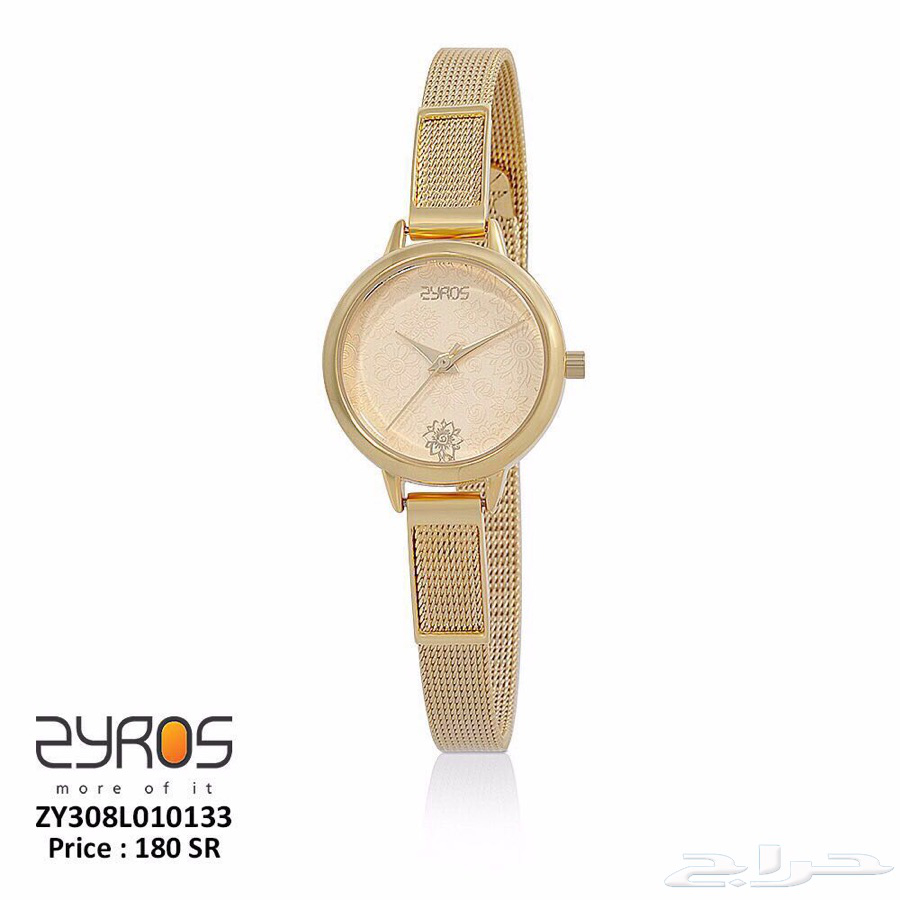department of trafficconfidence score: 0.914833
900x900-1_-7a2d2B-464d0-B.jpg
department of trafficconfidence score: 0.489509
900x900-1_-7c60YgD-1Do9-4.jpg
department of trafficconfidence score: 0.784989
900x900-1_-8e51AA79-eSn1R.jpg
ministry of laborconfidence score: 0.598731
900x900-1_-8Gjz5xix3maw9q.jpg
jeddah municipality bconfidence score: 0.537084
900x900-1_-8t2cF3ZaFR-f60.jpg
ministry of commercial aconfidence score: 0.682996
900x900-1_-8yQ9z84r59JeCb.jpg
 department of traffic
department of trafficconfidence score: 0.627814
900x900-1_-949aid953iCE6Z.jpg
department of trafficconfidence score: 0.545491
900x900-1_-98CdQ51W7bfTrH.jpg
department of trafficconfidence score: 0.531196
900x900-1_-9a557pbJVb659d.jpg
department of trafficconfidence score: 0.513720
900x900-1_-9vC2Ase4AMwz4E.jpg
department of trafficconfidence score: 0.970987
900x900-1_-a0xK-3od18393a.jpg
jeddah municipality aconfidence score: 0.495650
900x900-1_-A1C9YmlA7g07dn.jpg
department of trafficconfidence score: 0.833702
900x900-1_-b9ae9l-H391bIs.jpg
department of trafficconfidence score: 0.656111
900x900-1_-C9B35w8Cd4a76f.jpg
department of trafficconfidence score: 0.526086
900x900-1_-cc54UEbm9QBb60.jpg
department of trafficconfidence score: 0.725541
900x900-1_-CcmS1U8bjDG78B.jpg
 department of traffic
department of trafficconfidence score: 0.623727
900x900-1_-CS4afRHC60tfB7.jpg
department of trafficconfidence score: 0.534857
900x900-1_-DaakkUu6vB7a0u.jpg
department of trafficconfidence score: 0.815180
900x900-1_-EdCE6L0uVdqI--.jpg
department of trafficconfidence score: 0.450812
900x900-1_-eEjg631f76e5D3.jpg
department of trafficconfidence score: 0.799482
900x900-1_-F8tGh-3dp8MdI9.jpg
department of trafficconfidence score: 0.710014
900x900-1_-G6B8A884214t45.jpg
department of trafficconfidence score: 0.760935
900x900-1_-GNpnbA97mEV1AV.jpg
 department of traffic
department of trafficconfidence score: 0.527565
900x900-1_-hNftNCC4g12ua2.jpg
department of trafficconfidence score: 0.611495
900x900-1_-l7FG1V1e03J-Ce.jpg
department of trafficconfidence score: 0.494293
900x900-1_-M-0Wd6j2m2X-6A.jpg
department of trafficconfidence score: 0.464113
900x900-1_-mFdDA22SQdT1iY.jpg
department of passportconfidence score: 0.501914
900x900-1_-N7KaKCjq1AbNA5.jpg
department of trafficconfidence score: 0.805739
900x900-1_-P881C816Cbef71.jpg
department of trafficconfidence score: 0.659728
900x900-1_-P9b66hrq806pZA.jpg
department of trafficconfidence score: 0.849931
900x900-1_-PFN4GnH7kN767C.jpg
department of trafficconfidence score: 0.658729
900x900-1_-q7Q--feDAr3ach.jpg
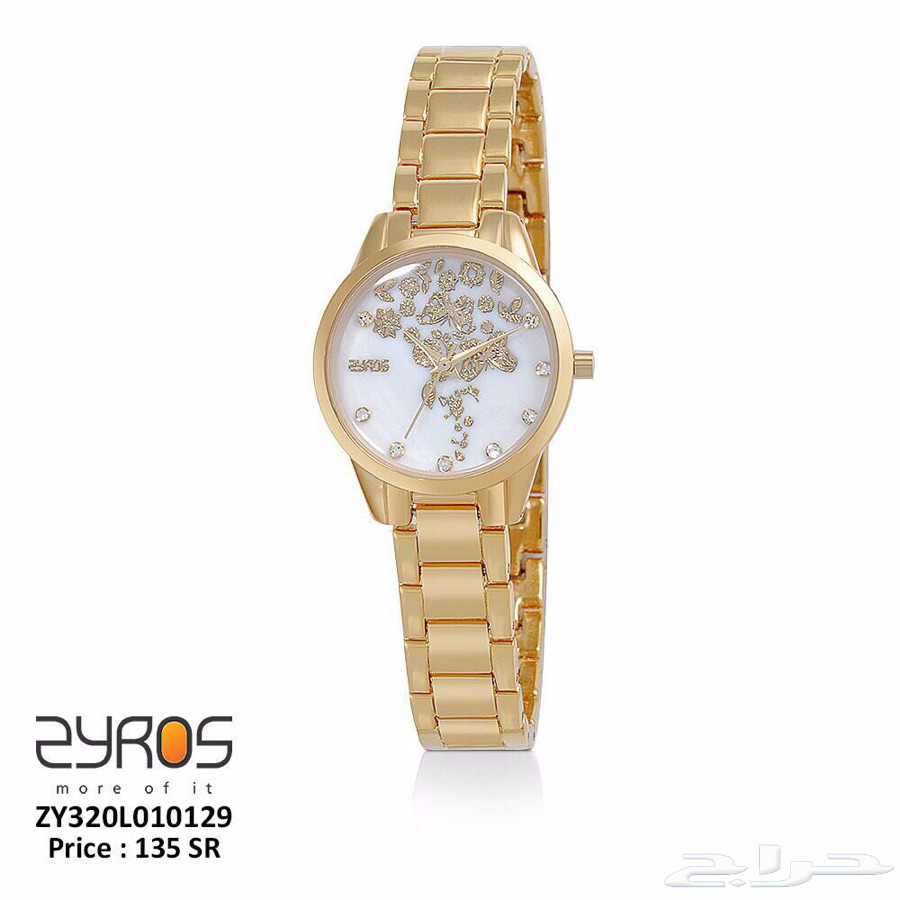department of trafficconfidence score: 0.796837
900x900-1_-qED9gb9F6dMevf.jpg
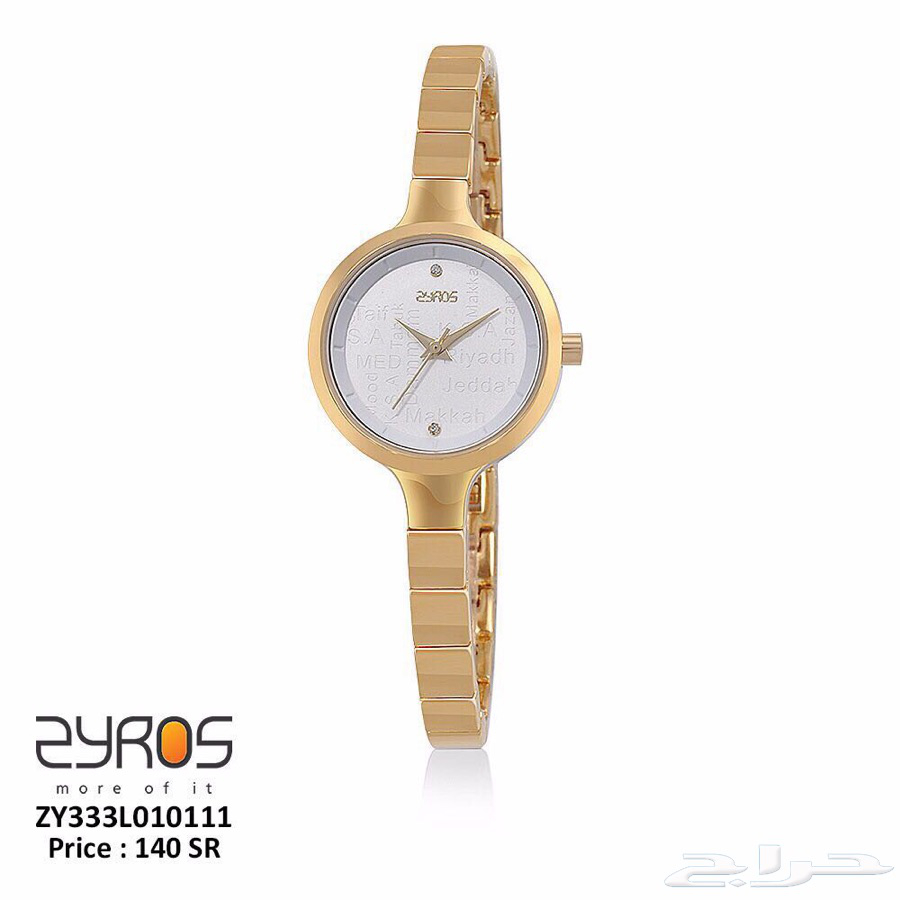department of trafficconfidence score: 0.809015
900x900-1_-Ryf0j12XIuB3y8.jpg
department of trafficconfidence score: 0.881774
900x900-1_-t6YA96dlp8o3cA.jpg
 department of traffic
department of trafficconfidence score: 0.464113
900x900-1_-vGS3CB4WdI0512.jpg
department of trafficconfidence score: 0.926556
900x900-1_-We8qeG1416q13-.jpg
ministry of commercial aconfidence score: 0.443259
900x900-1_-X72847buz8NbV3.jpg
jeddah municipality aconfidence score: 0.767112
900x902-1_-58dd97700aba3.jpg
 department of traffic
department of trafficconfidence score: 0.642374
900x915-1_-58de118774744.jpg
department of trafficconfidence score: 0.622170
900x937-1_-58de1ba09b05f.jpg
 department of traffic
department of trafficconfidence score: 0.568238
900x945-1_-58de118aa5686.jpg
department of trafficconfidence score: 0.528176
912pihEzqXKjJD.jpg
department of passportconfidence score: 0.529815
9lnibO1UFAaMHp.jpg
department of trafficconfidence score: 0.669901
b166Fq1R4l5360.jpg
ministry of laborconfidence score: 0.889289
bBkZngDsYkuT3I.jpg
ministry of laborconfidence score: 0.982085
C4C0781b104b13.jpg
 ministry of labor
ministry of laborconfidence score: 0.994285
cEei1JuWBoP5LS.jpg
ministry of laborconfidence score: 0.652343
CfIhd16S2j0MuK.jpg
jeddah municipality aconfidence score: 0.692044
ChbvkdGFUkYzJx.jpg
jeddah municipality aconfidence score: 0.884256
DQLgTnLglaXUJ5.jpg
jeddah municipality aconfidence score: 0.556116
Eeuf923NnEA7PT.jpg
ministry of laborconfidence score: 0.586580
EHe15apxhguL7n.jpg
department of trafficconfidence score: 0.555833
fi-bTP3tBVclxN.jpg
ministry of laborconfidence score: 0.994285
G0YV732da0a51T.jpg
ministry of laborconfidence score: 0.679280
gXhiqQYStSHodW.jpg
ministry of laborconfidence score: 0.686117
htU99sKTvPYvyH.jpg
department of passportconfidence score: 0.709720
IB6qe65qPvazyW.jpg
ministry of laborconfidence score: 0.502684
im4TwBk7R27gXt.jpg
jeddah municipality aconfidence score: 0.546557
J8tXo778BZdMOl.jpg
ministry of commercial aconfidence score: 0.272568
kt7QwajsYHW87q.jpg
jeddah municipality aconfidence score: 0.602815
l4P7JOPE1zhrKV.jpg
ministry of laborconfidence score: 0.371568
lXSRa6V0j3wI3u.jpg
department of trafficconfidence score: 0.412750
mp8ZDQF7dinvpy.jpg
ministry of laborconfidence score: 0.554486
N1dV-1Es9s5e85.jpg
jeddah municipality aconfidence score: 0.983613
Nwv9jrc1LQGIEF.jpg
jeddah municipality aconfidence score: 0.500227
O7yUMjCblB3sGS.jpg
 ministry of labor
ministry of laborconfidence score: 0.783595
oHFQNFow18LeqH.jpg
ministry of laborconfidence score: 0.998116
oidm0QBio55zR9.jpg
 jeddah municipality a
jeddah municipality aconfidence score: 0.727902
q4Ka0nXXCiip1r.jpg
 ministry of labor
ministry of laborconfidence score: 0.502684
qKiqnBioKWw5Gk.jpg
jeddah municipality aconfidence score: 0.745158
RZE3fTbCfFOXaN.jpg
ministry of laborconfidence score: 0.703672
sa2Mmjdab99gDw.jpg
jeddah municipality aconfidence score: 0.582026
sIf2Chb24WmDxt.jpg
department of trafficconfidence score: 0.519843
T6xnpzbkA2M3ff.jpg
 jeddah municipality a
jeddah municipality aconfidence score: 0.741729
TMutjONTEDReCX.jpg
department of trafficconfidence score: 0.688238
UXI1mw8sbNLsIN.jpg
jeddah municipality bconfidence score: 0.519260
VftFpED2F0268O.jpg
ministry of laborconfidence score: 0.476427
WRk3Qgq7RNAcQd.jpg
ministry of laborconfidence score: 0.596594
wyJ8DvdmnqZQ2t.jpg
jeddah municipality aconfidence score: 0.697276
ya2JFn585iO0lH.jpg
 department of traffic
department of trafficconfidence score: 0.816939
YO3eYI3JtpVqnZ.jpg
ministry of laborconfidence score: 0.557552
ZBKnRLjmCzKl6l.jpg
jeddah municipality bconfidence score: 0.769545
misclassified as [gov not exist]
573x573-1_-DeS8uiGp3gJc0S.jpg
otherconfidence score: 0.999141
e30e2427080809.jpg
 other
otherconfidence score: 0.991993
images (32).jpg
.jpg) other
otherconfidence score: 0.805770
images (5).jpg
.jpg) other
otherconfidence score: 0.559903
images (9).jpg
.jpg) other
otherconfidence score: 0.608932
logo_d (13).jpg
confidence score: 0.995251
logo_ef (2).jpg
confidence score: 0.653026
youtube_ZqIDJcK4FJs.jpg
otherconfidence score: 0.669712